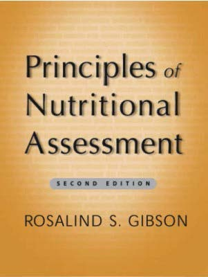

Principles of Nutritional Assessment.
Chapter 17: Assessment of iron
status.
To be revised and

updated by A.N.Other
and R.S.Gibson
April 2020
The assessment of the iron status of the population is critical: iron deficiency is the most frequently occurring micronutrient deficiency in low-income and industrialized countries.
Functions of iron
The human body contains about 2.5 to 4g of elemental iron. Of this, about 70% is present in the hemoglobin, the oxygen-carrying pigment of the red blood cells that plays a critical role in transferring oxygen from lung to tissues. Hemoglobin is made up of four heme subunits, each with a polypeptide chain of globin attached. Each molecule of heme consists of a protoporphyrin IX molecule with one iron atom. In addition, about 4% of body iron is present in myoglobin, the oxygenbinding storage protein found in muscle. The structure of myoglobin is similar to hemoglobin, except that it contains only one heme unit and one globin chain.
Trace amounts of iron are also associated with electron transport and several enzymes. Examples include the heme-containing cytochromes that serve as electron carriers within the cell, iron-sulfur proteins (flavoproteins, heme-flavoproteins) that are required for the first reaction in the electron transport chain, and hydrogen peroxidases (e.g., catalase and peroxidase). The cytochrome P450 family of enzymes also contain heme and are located in microsomal membranes of liver cells and intestinal mucosal cells. Key functions of cytochrome P450 involve detoxification of foreign substances in the liver, and synthesis of steroid hormones and bile acids (Yip and Dallman, 1996; Beard et al., 1996)
In addition to these functional forms, as much as 25% of total body iron is present as storage iron, found primarily in the liver. Smaller amounts occur in the reticulo-endothelial cells of the bone marrow and spleen; and in the muscle tissues. Of the storage iron, approximately two-thirds consists of ferritin, the soluble fraction of the nonheme iron stores. Small quantities of ferritin can be synthesized in all cells of the body, even those with no special iron storage function. Ferritin also appears in small concentrations in the serum but is not involved in iron transport. The remainder of storage iron is insoluble hemosiderin (Yip and Dallman, 1996)
Stored iron serves as a reservoir to supply cellular needs, mainly hemoglobin production, and is especially important in the third trimester of pregnancy. The size of the storage component is most strongly influenced by age, sex, body size, and either the magnitude of iron losses or the presence of diseases of iron overload (Brittenham et al.,1981).
Iron transport is carried out by the transport protein transferrin. The latter delivers iron to the tissues by means of cell membrane receptors specific for transferrin (Section 17.8). About 20–30mg of iron cycles through the transport component each day.
Absorption and metabolism of iron
Three main factors in the body operate to maintain iron balance and prevent iron deficiency and iron overload. These are: (a) intake, (b) storage, and (c) loss of iron. The interrelationship of these factors has now been described mathematically, so that the amount of storage iron can be predicted as long as iron losses and bioavailability of iron are known (Hallberg et al., 1998).
The two different forms of dietary iron, heme and nonheme, are absorbed by separate mechanisms. Heme iron is derived from the hemoglobin and myoglobin in meat, and is absorbed readily as the intact moiety. Nonheme iron is found primarily in plant-based foods, meat, and iron-fortified foods, and is absorbed from the common nonheme pool within the gut. The absorption of nonheme iron is affected by the simultaneous ingestion of many other dietary components; some inhibit and others enhance nonheme iron absorption.
Inhibitors of nonheme iron absorption include phytate and polyphenols, as well as certain vegetable proteins (e.g., soybean protein). Calcium inhibits both nonheme and heme iron absorption, although the precise mechanism is unclear. In contrast, vitamin C, other organic acids, and animal tissues (meat, fish, and poultry) enhance nonheme iron absorption (Hallberg and Hulthen, 2000). Details are given in Section 4.8 and IOM (2001).
The amount of iron in the stores varies widely, depending on sex and iron status. The iron bound to ferritin is more readily mobilized than iron bound to hemosiderin. In cases of chronic iron deficiency, iron stores in the bone marrow, spleen, and liver are depleted first, after which tissue iron deficiency occurs. In contrast, when iron balance is positive, iron stores gradually increase. In general, depletion of iron stores alone does not have any adverse functional consequences, although there are some exceptions (Beard et al., 1996).
Total daily iron losses are small and occur mainly in the feces (0.6mg/d), although very small amounts are also lost in desquamated skin cells and sweat (0.2 to 0.3mg/d), and in urine (< 1mg/d). In premenopausal women, total iron losses are larger (about 1.3mg/d) because of the additional loss of iron in menstrual blood. On average, menstrual blood loss is 30 to 40mL per cycle or 0.4 to 0.5mg iron per day, although in some women it is much greater (Yip and Dallman, 1996)
Most of the iron in erythrocytes is recycled for hemoglobin synthesis at the end of their functional lifetime (i.e., on average 120d). At this time, the erythrocytes are degraded by the macrophages of the reticular endothelium, and the iron is rereleased in the form of iron bound to transferrin or ferritin. This process is termed iron turnover; each day 0.66% of the total iron content of the body is recycled in this way. For more details on the functions, absorption, and metabolism of iron see (Fairbanks 1994, Hallberg , 2001, Miret et al., 2003.)
Deficiency of iron in humans
Iron deficiency is particularly prevalent in infants, young children, and pregnant women. It may arise from inadequate intakes of dietary iron, poor absorption, excessive losses, or a combination of these factors. In normal circumstances, only a small amount of iron is lost each day, with the exception of menstrual losses in premenopausal women.
Overt physical manifestations of iron deficiency include anemia, angular stomatitis, glossitis, dysphagia, hypochlorhydria, and koilonychia (spoon nails). Behavioral disturbances such as pica, characterized by the abnormal consumption of nonfood items such as dirt (geophagia) and ice (pagophagia), can also occur. Other less-specific physiological manifestations that are associated with iron deficiency include fatigue, anorexia, tiredness, impaired exercise or work performance, developmental delay, and cognitive impairment. These functional consequences of iron deficiency are most likely to occur when the iron deficiency is accompanied by a measurable decrease in hemoglobin concentration (IOM, 2001). Whether adverse pregnancy outcomes such as preterm delivery and higher maternal mortality are associated with iron deficiency is still uncertain (Allen, 1997).
Food sources and dietary intakes
High iron foods include liver, kidney, mussels, and red meat. Foods with a medium iron content include chicken, processed meat, fish, and legumes (non-heme iron only). Milk and milk products are poor sources of dietary iron (USDA, 2003). Flesh foods are especially important because of their high content of bioavailable heme iron, and their enhancing effect on nonheme iron absorption (Hallberg and Rossander, 1984).
In many industrialized countries, cereal products fortified or enriched with iron, provide the highest proportion of dietary iron, followed by meat, poultry, and fish, and then vegetables and fruits (Gregory et al., 1990; McLennan and Podger, 1998; Russell et al., 1999). The bioavailability of iron in these mixed diets probably ranges from 15% to 18%, provided they contain ample quantities of flesh foods and ascorbic acid. In low-income countries, the proportion of heme iron in the diet is generally much lower, so that absorption of dietary iron is probably only about 5%–10% (FAO/WHO, 1988).
Effects of high intakes of iron
Cases of acute iron toxicity have been reported, mainly among children who accidentally ingest medicinal iron supplements (IOM, 2001). More common are adverse gastrointestinal effects following the administration of high doses of iron supplements, especially when they are taken without food (Brock et al., 1985). A reduction in zinc absorption has also been associated with high intakes of iron supplements given in the fasting state (Sandström et al., 1985), but not when the iron is given as a fortificant in food (Davidsson et al., 1995).
Some people are at risk from iron overload as a consequence of hereditary hemochromatosis, injections of therapeutic iron, multiple blood transfusions, or at least in part from excessive intakes of dietary iron (e.g., some Bantu in South Africa) (Andrews, 1999)
The U.S. Food and Nutrition Board has set the Tolerable Upper Intake Level (UL) for iron for adults, including pregnant and lactating women ≥ 19y, at 45mg/d, whereas the level for infants and children 1–18y is 40mg/d (IOM, 2001).
Development of iron-deficiency anemia
Three stages in the development of iron deficiency anemia can be recognized and are best characterized by the use of multiple indices (Section 17.9). The three stages are the following:
Iron depletion, the first stage, is characterized by a progressive reduction in the amount of storage iron in the liver. At this stage, the supply of iron to the functional compartment is not compromised so levels of transport iron and hemoglobin are normal. However, the progressive depletion of iron stores will be reflected by a fall in serum ferritin concentrations.
Iron-deficient erythropoiesis, , the second stage, is characterized by the exhaustion of iron stores and is also referred to as “iron deficiency without anemia”. At this stage the iron supply to the erythropoietic cells is progressively reduced and decreases in transferrin saturation occur (Section 17.5). At the same time, there are increases in serum transferrin receptor (Section 17.8) and erythrocyte protoporphyrin concentrations (Section 17.7). Hemoglobin levels may decline slightly at this stage, although they usually remain within the normal range.
Iron-deficiency anemia, the third and final stage of iron deficiency, is characterized by the exhaustion of iron stores, declining levels of circulating iron, and presence of frank microcytic, hypochromic anemia. The main feature of this stage is a reduction in the concentration of hemoglobin in the red blood cells, arising from the restriction of iron supply to the bone marrow. Decreases in the hematocrit and red cell indices also occur (Sections 17.2 and 17.3). Examination of a stained blood film allows confirmation of the presence of hypochromia and microcytosis.
The different measures of iron status are each discussed in the remainder of this chapter, starting with those used in the diagnosis of anemia — hemoglobin and hematocrit.
17.1 Hemoglobin
Iron is an essential component of the hemoglobin molecule, the oxygen-carrying pigment of red blood cells. Each hemoglobin molecule is a conjugate of a protein (globin) and four molecules of heme. Measurement of the concentration of hemoglobin in whole blood is probably the most widely used test for iron-deficiency anemia. It is important to note that some misclassification will always arise because the range of hemoglobin values for normal nonanemic persons overlap with values for persons with iron-deficiency. This means that hemoglobin should not be used as the only measure of iron status in individuals. Indeed it can only be used as the sole indicator of iron-deficiency anemia in populations under very specific circumstances (Section 17.1.3). The use of hemoglobin as a measure of iron status has other, more specific, limitations, as discussed below.
17.1.1 Factors affecting hemoglobin concentrations
Biological variation in hemoglobin concentrations are significant. Hemoglobin values tend to be lower in the evening than in the morning, by amounts of up to 10g/L. Day-to-day variation is low.
Age and sex are important determinants, particularly for younger subjects: median hemoglobin values rise during the first 10 years of childhood, with a further increase at puberty (Table 17.1).
Sex differences in hemoglobin are apparent at 6 mo of age, with boys having significantly lower hemoglobin concentrations than girls. Such discrepancies appear to be greater in infants with a birth weight < 3500g (Domellöf et al., 2002a). By the second decade of life, however, females have lower values that change very little after 12y of age. Hemoglobin levels of males during adolescence are strongly influenced by testosterone and thus by the age of sexual maturation. In young adults, the hemoglobin concentration for men is on average about 20g/L higher than for women. These sexrelated differences diminish gradually with increasing age.Race is known to influence hemoglobin concentrations. Individuals of African descent have hemoglobin values 5–10g/L lower than Caucasians, irrespective of age, income, or iron deficiency. It is likely that a genetic factor is involved. As a result, race-specific cutoffs for diagnosing anemia in persons of African descent may be necessary (JohnsonSpear and Yip, 1994). (WHO/UNICEF/UNU, 2001 ) recommends moving the hemoglobin cutoffs downward by 10g/L for individuals of African descent, irrespective of age. In contrast, the Caucasian cutoffs for anemia seem to be appropriate for persons in Thailand (Charoenlarp and Polpothi, 1987) and Indonesia (Khusun et al., 1999), after excluding subjects with abnormal hemoglobin types.
Pregnancy results in an expansion of both plasma volume and the red cell mass. The greater expansion is of plasma volume so hemoglobin becomes diluted. As a result, there is a fall in hemoglobin concentration. This is most evident near the end of the second trimester of pregnancy, after which, during the third trimester, hemoglobin concentrations gradually rise (Section 17.1.2).
Higher altitudes generate an adaptive response in the body to both the lower partial pressure of oxygen and the reduced oxygen saturation of blood (Hurtado et al., 1945). This becomes significant at elevations above 1000m, with usual hematocrit and hemoglobin concentrations increasing gradually with altitude. Consequently, a series of adjustments for altitude for hemoglobin cutoffs have been published by the Centers for Disease Control and Prevention (CDC, 1989) (Section 17.1.2).
Iron-deficiency anemia develops only during the third stage of iron deficiency, when iron stores are exhausted and the supply of iron to the tissues is compromised. Hemoglobin is therefore an insensitive measure of iron deficiency as the concentrations only fall during this late stage. In addition, considerable overlap exists in the hemoglobin values of normal nonanemic and iron-deficient individuals (Figure 1.4), further decreasing the sensitivity of this measure.
Certain other micronutrient deficiencies are associated with anemia and, by definition, with low hemoglobin concentrations. These include deficiencies of vitamin A, B6, and B12, and riboflavin, folic acid, and copper (van den Broek and Letsky, 2000); details of the role of vitamins in the etiology of anemia are given in (Fishman et al. (2000).
Parasitic infections such as with the malarial protozoan Plasmodium falciparum cause low hemoglobin concentrations by rupturing erythrocytes and suppressing the production of new erythrocytes. Helminths (such as hookworms) and flukes (e.g., schistosomes) may also cause low hemoglobin values as a result of loss of blood and thus iron (Stoltzfus et al., 2000 ; Nestel and Davidsson, 2002).
Certain disease states can affect hemoglobin concentrations, significantly reducing the specificity of the measure. Low hemoglobin values arise in chronic infections and inflammation, chronic disease states including HIV-AIDS, hemorrhage, protein-energy malnutrition, hemoglobinopathies, and other states in which there is overhydration or acute plasma volume expansion. In contrast, hemoglobin values are elevated in polycythemia and hemoconcentration caused by dehydration.
Cigarette smoking is associated with higher concentrations of hemoglobin (3–7g/L) in adults. This is attributed to a reduction in the oxygen-carrying capacity of the blood arising from the carbon monoxide induced increase in carboxyhemoglobin levels.
17.1.2 Interpretive criteria
In the United States hemoglobin values are often compared with data from the distribution of hemoglobin from a healthy, nonpregnant reference sample studied during the National Health and Nutrition Examination Survey (NHANES) III, 1988–1991). The reference sample consisted of individuals of all races, but excluded pregnant women and those with a higher risk of iron deficiency based on an abnmissing value for 3 of the 4 tests (free erythrocyte protoporphyrinormal value or, transferrin saturation, serum ferritin, and mean cell volume) (Looker et al. 1997). The hemoglobin “cutoff values” were calculated as the mean of the reference sample minus 1.645 SD, giving values corresponding to the 5th percentile, shown in Table 17.2.
Although often termed hemoglobin “cutoff values,” the values from (Looker et,al., 1997). in Table 17.2 are more appropriately called “reference limits” for hemoglobin: they are not based directly on observed clinical or functional impairment (Section 15.4). Implicit in the use of a 5th percentile reference limit derived from the distribution of hemoglobin values for a healthy reference sample is the concept that most individuals with hemoglobin concentrations below the limit/cutoff will be at risk of having suboptimal hemoglobin concentrations (i.e., the hemoglobin would increase in response to iron supplementation). However some misclassification will always occur (Figure 1.4).
Cutoff values for hemoglobin for identifying anemia during infancy were not defined by (Looker et al., 1997). The commonly used cutoff at 6–12mo of age is < 110g/L, a level used by INACG / WHO / UNICEF (Table 17.2) and by the CDC (1998). This value was extrapolated from older age groups and may not be appropriate for infants (Emond et al., 1996). Domellöf et al. (2002b) have defined cutoffs for hemoglobin for infants, based on iron-replete, breastfed infants. These are < 105g/L for infants at 4 and 6mo of age and < 100g/L at 9mo of age.
The criteria used by the CDC (1989) to identify anemia in pregnant women during trimesters 1, 2, and 3, respectively, are 110, 105, and 110g/L. The International Nutritional Anemia Consultative Group (INACG) recommend trimester-specific adjustments and a generic value for use when the trimester is unknown; these are shown in Table 17.3 (Nestel, 2002). In contrast, the earlier recommendations by INACG / WHO / UNICEF use one cutoff of 110g/L throughout pregnancy (Stoltzfus and Dreyfuss, 1998).
Adjustments for altitude and smoking have also been compiled by the CDC (1989) as noted earlier. These adjustments have been adopted by INACG (Nestel, 2002). and are shown in Table 17.4 and Table 17.5. They can either be added to the cutoff values shown in Table 17.2, or subtracted from the measured hemoglobin values. When applying the altitude adjustments, the altitude at which the blood sample is taken should be rounded up or down to the nearest 500m. The CDC adjustments for altitude can also be used for pregnant women (Nestel, 2002). Note that the adjustments for smoking, altitude, race, and pregnancy are additive.
Tables of mean and selected percentiles for hemoglobin by age and sex for all persons except breastfeeding infants and children in the NHANES III population are included in Appendix A17.1 (IOM, 2001). Potentially iron deficient subjects were not excluded when generating this compilation.
The U.K. national surveys present data for hemoglobin (Gregory et al., 1990, 1995, 2000; Finch et al., 1998). Mean, median, and lower and upper 2.5 percentiles by age and sex are presented. Again, potentially iron-deficient subjects are not specifically excluded. The New Zealand national surveys for persons 15y and over (Russell et al., 1999) and children 5–14y (Parnell et al., 2003) also present mean hemoglobin concentration by age, sex, and race or ethnicity.
17.1.3 Using hemoglobin distribution to assess population iron status
Hemoglobin distribution can be used in large-scale field studies to assess the iron status of a population (Yip et al., 1996). This simplified approach is designed to assess the prevalence and etiology of anemia, based solely on hemoglobin, and is especially useful when it is not feasible to use multiple biochemical tests for iron status because of cost or operational constraints. It is also useful in developing countries where factors other than inadequate intakes of dietary iron, such as parasitic infections and hemoglobinopathies, often affect red cell production and thus interfere with the interpretation of iron status measures.
The hemoglobin distribution approach involves comparing the hemoglobin distribution curves for men, women, and children of the study population, with optimal hemoglobin distributions derived from a healthy reference sample. These have been compiled from NHANES II (Pilch and Senti, 1984) and NHANES III (Looker et al. 1997). populations by excluding subjects with biochemical evidence of iron deficiency, as noted earlier. Figure 17.1 depicts the hemoglobin distributions for the NHANES +II reference samples. These distributions can be used as a standard for comparison with the hemoglobin distributions from other surveys.
If anemia is prevalent in the population then the distribution will be shifted to the left. The distribution approach can also indicate when inadequate dietary intake of iron is the main factor causing iron deficiency in a population. In this case the hemoglobin distributions for children and women are disproportionately affected. Both subgroups have significantly lower median hemoglobin values when compared with their respective reference distributions, whereas the median of the distribution for adult men is virtually unaffected. For example, comparison of the hemoglobin distributions for both schoolaged children (Figure 17.2) and men from Zanzibar with the corresponding U.S. reference sample for African Americans shows a marked shift of hemoglobin concentrations. In Zanzibar, the decreased hemoglobin levels were related to gastrointestinal blood loss as a result of hookworm infection rather than inadequate dietary iron intake.
17.1.4 Measurement of hemoglobin
Hemoglobin is best determined using venous blood, anticoagulated with EDTA. Alternatively, capillary blood from heel-, ear-, or fingerpricks, collected in heparinized capillary tubes, can be used. Hemoglobin concentrations determined using capillary blood are less precise than are the corresponding measurements on venous blood, primarily because interstitial fluid may dilute capillary samples (Burger and Pierre-Louis, 2003).
The cyanmethemoglobin method, which is recommended by the International Committee for Standardization in Hematology (ICSH, 1987), is the most reliable, provided that the blood specimen has been accurately diluted. Incorrect dilution of the sample is one of the main sources of error in this method (Pilch and Senti, 1984) The method involves converting all of the usually encountered forms of hemoglobin (oxyhemoglobin, methemoglobin, and carboxyhemoglobin) to cyanmethemoglobin. The analysis is then normally performed with a spectrophotometer. The coefficients of both analytical and biological variation for hemoglobin by the cyanmethemoglobin method using venous blood are often less than 4% (Worwood, 1996). A WHO international standard is available to assess the accuracy of the assay (ICSH, 1987), Hemoglobin can also be determined in this way from blood spots collected in the field on filter paper discs; levels remain unchanged during storage for 1mo (Feraudi and Mejia, 1987).
Alternatively, hemoglobin can be measured electronically on an automated counter (e.g., Coulter counter system) using EDTA-anticoagulated blood.
A portable hemoglobin photometer can be used for population assessment in remote field settings. The “HemoCue” is battery operated and uses a dry reagent (sodium azide) in a microcuvette for direct blood collection and measurement. The accuracy and precision of hemoglobin values based on the HemoCue are comparable to those obtained using the cyanmethemoglobin method, provided standardized procedures for the sample collection and analysis are followed (Von Schenck et al., 1986). Details of standardization procedures to enhance the accuracy and reliability of hemoglobin concentrations measured by the HemoCue are given in (Burger and Pierre-Louis, 2003).
17.2 Hematocrit
The hematocrit is defined as the volume fraction of packed red cells, sometimes termed the “packed cell volume” (PCV). Variation with age and sex is shown in Figure 17.3. In iron deficiency, the hematocrit falls after hemoglobin formation has become impaired. As a result, in early cases of moderate iron deficiency, a marginally low hemoglobin value may be associated with a nearly normal hematocrit (Graitcer et al., 1981). Only in more severe iron-deficiency anemia are both hemoglobin and hematocrit reduced. Limitations of the hematocrit determination include:
- Poor sensitivity with hematocrit falling only in the third stage of iron deficiency
- Poor specificity, as hematocrit is affected by the same factors that influence hemoglobin
- Poor precision, particularly when capillary blood samples are used
- Values that are age and sex dependent (Figure 17.3) with similar trends to those described for hemoglobin (Table 17.1)
Hematocrit, like hemoglobin, is usually determined on EDTA-anticoagulated blood from a venipuncture or capillary blood. The measurement is relatively easy, rapid, and often used in screening for iron-deficiency anemia, although the technical errors for the measurement of hematocrit are greater than for hemoglobin. Measurement errors may result from:
- Poorly packed iron-deficient cells, resulting in spuriously elevated values
- Improper mixing of blood caused by intermittent blood flow from the puncture site
- Excessive anticoagulant in the collection tube (e.g., if collection tube is not filled with blood)
- Dilution of blood by an alcohol solution because the finger was not dried before it was punctured
- Elevated white blood cell counts, leading to a poorly defined boundary between erythrocytes and plasma in the hematocrit tube
17.2.1 Interpretive criteria
The cutoff values for hematocrit, compiled by INACG / WHO / UNICEF, are presented in Table 17.6. (Stoltzfus and Dreyfuss, 1998). The U.K. national surveys (Gregory et al., 1990, 1995, 2000; Finch et al., 1998). present the mean, median, and lower and upper 2.5 or 5th percentiles for hematocrit. Again, potentially iron-deficient subjects are not specifically excluded.17.2.2 Measurement of hematocrit
Hematocrit can be measured manually by centrifuging a minute amount of blood in a heparinized capillary tube until the red cells have been reduced to a constant packed cell volume. The hematocrit is calculated by comparing the height of the column of packed red cells with the height of the entire column of red cells and plasma.
Alternatively, hematocrit can be measured electronically using an automated counter. It is noteworthy that when hematocrit is determined manually as described above, values are about 1% lower than those generated electronically from automated counters (Fairbanks, 1980; Looker et al., 1995).
17.3 Red cell indices
Red cell indices are derived from measurements of hemoglobin, hematocrit, and red blood cell count. They are used to define cell size and the concentration of hemoglobin within the cell so that different types of anemia can be diagnosed. Their accuracy, precision, and use have increased with the growing availability of automated electronic cell-counting instruments. Fresh samples of whole anticoagulated blood are required. Values for red cell indices from automated counters are slightly higher than those determined manually (Fairbanks, 1980);
If subnormal values for the red cell indices are noted in the absence of thalassemia trait, anemia of inflammatory disease, and other known causal conditions, additional measures of iron status are recommended to confirm the diagnosis of iron deficiency. The confirmatory tests commonly used are serum iron and total iron-binding capacity, serum ferritin, erythrocyte protoporphyrin, and more recently, serum transferrin receptor. These tests are discussed in Sections 17.5 to 17.8.
Table 17.7 summarizes the expected changes in the more important red cell indices during iron-deficiency anemia, macrocytic anemia resulting from vitamin B12 or folic acid deficiency, and anemia of chronic inflammation (also known as anemia of chronic disease). The anemia of chronic inflammation (e.g., due to rheumatic fever, Crohn's disease, or ulcerative colitis) results from a defect in iron recycling. There appears to be a defect in the release of iron from macrophages, or the transfer of iron from the reticuloendothelial cells to plasma transferrin, or both. The anemia is generally mild, and can be normochromic and normocytic or slightly hypochromic and microcytic (Andrews, 1999). Changes in red cell indices during vitamin B12 and folic acfolic acid deficiency and are descare described in more detail in Section 22.1.1. In iron-deficiency anemia, the fall in hemoglobin is followed by a fall in mean cell volume, then mean cell hemoglobin, and finally mean cell hemoglobin concentration.
17.3.1 Mean cell volume
Mean cell volume or mean corpuscular volume (MCV) is a measure of the average size of the red blood cells expressed in femtoliters (fL). Cells may be abnormally large (macrocytosis), as in vitamin B12 or folic acid deficiency, or abnormally small (microcytosis), as in iron and vitamin B6 deficiency. Mean cell volume is best determined directly with an electronic counter as results obtained in this way are highly reproducible. If an electronic counter is not available, mean cell volume can be calculated from the hematocrit and the red blood cell count determined manually ( Wintrobe et al., 1981):
\[\small MCV\ (f\kern-1.5ptL) = \frac {hematocrit\ (volume\ f\kern-1.5ptraction)} {red\ blood\ cell\ count\ (10^{12}/L)}\]
Mean cell volume is less affected by sampling errors in skin puncture capillary blood samples than hemoglobin, because red cell size is unaffected if the sample is diluted by the interstitial fluid.
A low MCV value only occurs when iron deficiency is severe. It is a relatively specific index for iron-deficiency anemia, provided that the anemias of chronic inflammation, certain hemoglobinopathies, and lead poisoning are excluded. In macrocytic anemias associated with vitamin B12 or folate deficiency, MCV values are high ( Table 17.7.) Spuriously high values for MCV may be apparent when determined electronically as a consequence of hyperglycemia or hypernutremia.
The MCV increases progressively from 6mo of age to early adulthood (Yip et.al., 1984). Differences according to sex are small; MCV is slightly higher in young adult females than in males. Individuals of African descent have lower MCV values than do Caucasians. Such differences are said to have a genetic basis, as described for hemoglobin. (Section 17.1).
Cutoff values for MCV used during the NHANES III survey were slightly higher than those used for NHANES II, and correspond to the 5th percentiles of the NHANES III reference sample. The cutoffs are given in Table 17.8 and include values for children in four age groups. Values greater than 98fL indicate macrocytosis.
Percentile distributions for MCV levels by race, sex, and age, for all persons 1–74y in the NHANES II population, are available, and for the NHANES II “reference population” for all races as described for hemoglobin in Section 17.1.2 (Pilch and Senti, 1984). At present, comparable data are not available for NHANES III.
Age and sex-specific data for MCV are available for the U.K. national surveys (Gregory et al., 1990, 1995, 2000; Finch et al., 1998). Mean, median, and lower and upper 2.5 or 5th percentiles are presented. In these data, potentially iron-deficient subjects are not specifically excluded.
17.3.2 Mean cell hemoglobin
Mean cell hemoglobin (MCH) is the mean hemoglobin content of individual red blood cells. It is derived from the ratio of hemoglobin to the red blood cell count:
\[\small MCH (pg) = \frac {hemoglobon\ (g/L)} {red\ blood\ cell\ count\ (10^{12}/L)}\]
The MCH changes progressively from infancy to adulthood, when values range from 27 to 32pg. The changes in iron-deficiency anemia are similar to those for MCV; MCH is low in iron-deficiency anemia but high in the macrocytic anemias of both vitamin B12 and folate deficiency (Table 17.7). In the latter, the red blood cells are laden with hemoglobin but are reduced in number. In severe iron deficiency, the relative fall in MCH is greater than the corresponding fall in MCV (Dallman, 1977). Age and sex-specific data for MCH are available for the U.K. national surveys (Gregory et al., 1990, 1995, 2000; Finch et al., 1998). Mean, median, and lower and upper 2.5 or 5th percentiles are given. Potentially iron-deficient subjects are not excluded.
17.3.3 Mean cell hemoglobin concentration
If both the hemoglobin concentration and the hematocrit are known, the concentration of hemoglobin in the red blood cells can be determined. This is known as the mean cell hemoglobin concentration (MCHC) and is calculated as:
\[\small MCHC (g/L) = \frac {hemoglobin\ (g/L)} {hematocrit\ (vol. f\kern-1.5ptraction)}\]
The MCHC is normally determined with an electronic counter, although manual determinations are possible. After the first few months of life, MCHC is less affected by age than any other red cell index (Matoth et al., 1971). Nevertheless, this index is the least useful of the red cell indices because it is last to fall during iron deficiency. Mean cell hemoglobin concentrations are low in iron-deficiency anemia but normal in the macrocytic anemia of vitamin B12 and folic acid deficiency, and in the anemia of chronic disease (Table 17.7). Values in normal adults range from 320 to 360g/L. Values of < 300g/L indicate hypochromia and are associated with advanced iron deficiency. Age and sex-specific data for MCHC are available for the U.K. national surveys (Gregory et al., 1990, 1995, 2000; Finch et al., 1998). The mean, median, and lower and upper 2.5 or 5th percentiles are presented. Potentially iron-deficient subjects are not specifically excluded.
17.4 Red cell distribution width
Red cell distribution width (RDW) is a measure of the variation in red cell size (i.e., anisocytosis). It is normally expressed as the coefficient of variation of the mean cell volume:
\[\small RDW(\%) = \frac {SD\ of\ MCV\ (f\kern-1.5ptL) × 100\%} {MCV\ (f\kern-1.5ptL)}\]
The RDW can be determined routinely as part of a complete blood count on many automated electronic counters. Some counters output only the standard deviation as the measure of RDW.
Red cell distribution width increases in iron-deficiency anemia and was included as a marker of iron status in the NHANES III survey (Looker et al., 1995). A single cutoff for RDW of 14% was used in NHANE III. Using this, 65% of women of African descent aged 20–49y with an elevated RDW were also iron deficient based on the ferritin model (Section 17.6); 36% were anemic. In contrast, only 6% with a normal RDW showed similar signs of iron deficiency, and only 5% were anemic. For children 1–2y, the sensitivity of this cutoff was significantly worse, suggesting that different cutoffs are needed for children and adults. Bessman et al. (1983) classified anemic disorders based on a combination of a low, normal, and high MCV and two categories of RDW — normal (< 15.1%) and high (indicating anisocytosis). The anemias identified in this way are listed in Table 17.9.
Clearly, a high RDW is not specific for iron deficiency. High values also occur in folate or vitamin B12 deficiency and when iron and folate, or iron and vitamin B12 deficiencies coexist. Also, in some hemoglobinopathies (e.g. in S β-thalassemia and SS and SC hemoglobinopathy) RDW is elevated (Table 17.9).
However, iron-deficiency anemia results in a greater increase in RDW than does the microcytic anemia of the hemoglobinopathy S β-thalassemia (Bessman and Feinstein, 1979). Hence, RDW may be useful for differentiating between these two conditions. In contrast, in the anemia of inflammatory disease, RDW is normal.Some of the U.K. national surveys (Gregory et al., 1990, 2000) include data on red cell distribution width. Mean, median, and lower and upper 2.5 percentiles by age and sex are presented. The New Zealand National Children's Nutrition Survey also provide data on red cell distribution width by age, sex, race or ethnicity, and the prevalence of elevated values (defined as > 14%) (Parnell et al., 2003)
17.5 Serum iron, TIBC, and transferrin saturation
Three interrelated variables, serum iron, total iron-binding capacity (TIBC), and transferrin saturation are very useful for differentiating between nutritional iron deficiency and anemia arising from chronic infections, inflammation, or chronic neoplastic diseases. Nutritional iron deficiency is characterized by a low serum iron, elevated TIBC and, thus, low transferrin saturation, whereas in chronic infections, inflammation, or chronic neoplastic diseases, both serum iron and TIBC are low, so transferrin saturation tends towards the low end of the normal range.
Almost all iron in the serum is bound to the iron transport protein transferrin. In the fasting state, serum iron levels reflect iron in transit from the reticuloendothelial system to the bone marrow. Each molecule of transferrin (MW≈80kDa) can be bound to one or two atoms of iron, although usually only about one third of the binding sites are occupied.
The TIBC is the sum of all unfilled ironbinding sites on transferrin, and is measured as the total quantity of iron (μmol/L) that saturates all of the iron-binding sites on transferrin after the addition of exogenous iron to serum. Hence, TIBC is closely related to the concentration of transferrin. The TIBC of serum rises once the iron stores are depleted because of an increase in transferrin synthesis in response to increased iron absorption. This increase in TIBC occurs before there is any evidence of an inadequate supply of iron to erythropoetic tissue.
Serum iron and TIBC are usually determined at the same time, and the transferrin saturation is then calculated, as shown below. transferrin saturation measures the iron supply to the erythroid bone marrow: as the iron supply decreases, the serum iron concentration falls and the saturation of transferrin decreases.
\[\small transf\kern-2.0pterrin\ sat.(\%) = \frac {serum\ iron\ (μmol/L)}{TIBC\ (μmol/L)} × 100\%\]
Levels < 16% saturation indicate that the rate of delivery of iron is insufficient to maintain normal hemoglobin synthesis. However, low transferrin saturation levels are not specific for iron deficiency, as discussed below.
17.5.1 Factors influencing serum iron, TIBC, and transferrin saturation
Biological variation for serum iron may be quite large: coefficients of variation may exceed 30% — mainly as a result of variation in the release of iron from the reticuloendothelial system to the plasma among individuals (Worwood, 1996, 1997). In general, serum iron values tend to be elevated in the morning, decreasing in the afternoon and evening. As a result, measurements of serum iron should be determined on fasting morning blood samples. In this way, the effects of both recent dietary intake and diurnal variation are minimized.
TIBC is less subject to biological variation — especially diurnal effects — than is serum iron, but it is more susceptible to analytical errors. Table 17.10 compares the overall variability of serum iron, hemoglobin, and serum ferritin as indicated by within-subject, day-to-day variation for healthy subjects. The results for serum iron have obvious implications for its use at the population and individual levels. They highlight the importance of using multiple indices of iron status to provide a more valid assessment of iron status than any single measurement (Section 17.9). In NHANES III, the large diurnal variation for serum iron is reflected in the results for transferrin saturation shown in Figure 17.4.
Age-related changes in serum iron and, to a lesser extent, TIBC are marked. Serum iron levels rise during childhood, whereas TIBC falls (Figure 17.5). Values for both measures are highest in young adults, and decline steadily with advancing age (Yip et al., 1984).
Sex has only a small effect on serum iron and TIBC levels. In NHANES II, there was a tendency for serum iron levels to be higher in males than females after the middle of the second decade of life (Pilch and Senti, 1984) . In NHANES III, the median transferrin saturation was 26% to 30% for men and 21% to 24% for women Appendix A17.2 .
Oral contraceptive agents result in elevated levels of TIBC similar to those observed in iron deficiency (Pilch and Senti, 1984).
Iron deficiency leads to a fall in serum iron levels and a rise in serum transferrin and, thus, a rise in TIBC. Consequently, transferrin saturation is low. These changes appear during the second stage of iron deficiency, after iron stores are depleted. Hence, transferrin saturation is a more sensitive index of iron status than the red cell indices discussed in Section 17.3. It is also more consistently useful for diagnosing iron deficiency than either serum iron or total TIBC alone: a low transferrin saturation in association with an elevated TIBC is specific for iron deficiency.
Iron overload results in an elevated body iron store and, thus, a high serum iron level, leading to a low TIBC and an elevated transferrin saturation level. In NHANES III, a transferrin saturation > 70% was used as a criterion for detecting iron overload in adults (Looker et al., 1997). Iron overload occurs in conditions such as hereditary hemochromatosis, hemolytic anemia, chronic liver disease, and long-term transfusion therapy (Andrews,~1999). Hemochromatosis is one of the most common genetic diseases in populations of Northern European origin. In these countries, approximately 50 per 10,000 will be affected by the condition (Hansen et.al. 2001).
Chronic disease states, infection, inflammatory conditions, and chronic neoplastic diseases typically produce both low serum iron and low TIBC and, hence, a transferrin saturation that tends toward the low end of the normal range. These trends are the result of defects in the release of iron from the reticuloendothelial cells and the subsequent transport of iron from these stores by transferrin. Together, these defects result in a shortage of iron in the bone marrow, despite adequate or even slightly increased iron stores. As the iron stores are adequate, the body does not respond to the fall in serum iron by increasing absorption of iron from the diet. Consequently, transferrin synthesis is not increased, and levels of TIBC are low. Hence, the determination of TIBC allows one to distinguish between the low transferrin saturation associated with the anemia of chronic disease and that of true iron deficiency.
Decreased erythropoiesis is often associated with vitamin B12 or folic acid deficiency, as well as with the action of certain drugs and toxins. In these circumstances, serum iron levels are normal or slightly above normal because of decreased utilization of iron for hemoglobin synthesis; levels of TIBC are often normal or low. Consequently, transferrin saturation may be high.
Increased erythropoiesis can occur after recovery from bone marrow depression, in response to vitamin B12 and folate therapy, in hemolysis, and sometimes in polycythemia. In such cases, the serum iron concentration may fall below normal limits, whereas the TIBC is often high-normal or even high, a trend comparable to that observed in iron deficiency. As a result, some addditional alternative measures of iron status (e.g., serum ferritin) should be used to distinguish between iron deficiency and increased erythropoiesis.
17.5.2 Interpretive criteria
In adults, a transferrin saturation below about 16% will be associated with iron-deficient erythropoiesis, if the subjects with infection and inflammation are excluded (Beard et al., 1996). Cutoff points are not as clearly defined for infants and children, because agerelated differences in serum iron (but not TIBC) occur. This results in corresponding changes in the normal levels of transferrin saturation (Dallman et al., 1996). The extent of these changes is still uncertain.
Looker et al., (1997) suggested using cutoff values ranging from < 10% to < 14% for transferrin saturation in children 1–15y, and < 15% for adults ≥16y when assessing the prevalence of iron deficiency in the NHANES III survey, as shown in Table 17.14. The cutoffs of Looker et al., (1997). for transferrin saturation are slightly lower than those used earlier in NHANES II (Pilch and Senti, 1984). and approximate the 12th percentile. Lower cutoffs were used because of a change in the methodology for the measurement of serum iron in NHANES III (see below) and the fact that more blood samples were drawn late in the day, when serum iron values are normally lower.
transferrin saturation values > 70% were used as a criterion for detecting iron overload in adult males and females in both the NHANES II and III surveys, in combination with elevated serum ferritin levels (Section 17.6). In some studies, a lower cutoff value for transferrin saturation for screening for iron overload in women (i.e., > 50%) has been used (Hallberg, 1995).
Tables of mean and selected percentiles by age and sex, for percentage of transferrin saturation, derived from all the persons in the NHANES III survey, with the exception of breastfeeding infants and children, are given in Appendix A17.2 (IOM, 2001). A diagrammatic summary of this information is shown in Figure 17.6.
The U.K. National Diet and Nutrition Survey of young people aged 4 to 18y (Gregory et al., 2000) and that of people aged 65y and older (Finch et al., 1998). present data on the mean, median, and lower and upper 2.5 percentile values for percentage of transferrin saturation, as well as for plasma iron and TIBC. Tables of the mean percentage transferrin saturation by age, sex, race or ethnicity, and the prevalence of low values (i.e., < 12% if aged 5y and < 14% if aged 6–15y), are also given for the New Zealand National Children's Nutrition Survey (Parnell et al., 2003)
17.5.3 Measurement of serum iron and TIBC
Several methods are available for the assay of serum iron, some of which can be performed using a clinical chemistry autoanalyzer. Colorimetric procedures frequently use ferrozine as the chromogen to react with Fe(II) to form a violet complex (Giovanniello et al., 1968). Other chromogens that can be used include bathophenanthroline sulfonate and tripyridyltriazine (Zak et al., 1980). Alternatively, serum iron can be assayed by atomic absorption spectrophotometry. Often there are large discrepancies between serum iron concentrations assayed by different methods (Tietz et al., 1996), particularly at the lower end of the range where the diagnosis of iron deficiency is important (Worwood, 1996).
The assay of TIBC involves saturating the transferrin iron-binding capacity with excess iron, and then removing the excess unbound iron with magnesium carbonate, charcoal, or an iron exchange resin. The transferrin-bound iron in solution is then measured (ICSH, 1978). Uncertainties in this assay include variations in the type and amount of magnesium carbonate used to remove unbound iron, and in the concentration of the saturating-iron solution (Pilch and Senti, 1984). In 1990, the ICSH published revised recommendations for this assay (ICSH, 1990).
A more sensitive method for determining the total iron-binding capacity of serum is now available that can be readily applied to serum which is turbid, moderately jaundiced, or even slightly hemolyzed (Ramsay, 1997).
Potential sources of error in the measurement of both serum iron and TIBC include contamination by exogenous iron, interference by lipids and bilirubin in the spectrometric methods, and a copper interference with colorimetric assays (Tietz et al., 1996), To overcome the copper interference, the assay employing ferrozine, used for serum iron and TIBC in NHANES III, was improved by the addition of 1% thiourea (Looker et al., 1997). This led to lower serum iron values (by about 1.6μmol/L) in this survey than those for NHANES II, with a much larger discrepancy at low concentrations than at higher ones (Looker et al., 1995). Quality-control sera, with certified values for serum iron and TIBC and covering a wide range, should be included with each assay. A reference material for serum iron has been prepared by the ICSH Expert Panel on Iron (ICSH, 1978). Iron-free water should also be used. In the future, an immunological method that determines serum transferrin directly may be the method of choice. Correlation between the chemical and immunological methods appears high (Huebers et al., 1987). At present, however, there is no agreed recommended method and no international reference standard. Indeed, measurements of iron transport are now often omitted from nutrition surveys because of the large volume of serum sample required, cumbersome analytical methods, and their poor sensitivity and specificity for iron deficiency; their greatest value is in distinguishing between the anemia of inflammatory disease and that of true iron deficiency (Cook, 1999).
17.6 Serum ferritin
Ferritin was first identified in human serum by (Addison et al. (1972). Its function in the serum is unknown. Ferritin appears to enter the serum by secretions from the reticuloendothelial system (Cook and Skikne, 1982). In most healthy individuals and those with uncomplicated iron deficiency, the concentration of serum or plasma ferritin parallels the total amount of storage iron (Cook et al., 1974). Once iron stores become exhausted, however, serum ferritin concentrations no longer reflect the severity of the iron-deficiency state. Serum ferritin is the only measure of iron status that can reflect a deficient, excess, or normal iron status. Evidence for the quantitative relationship between serum ferritin and storage iron includes:
- Stainable bone marrow stores correlate positively with serum ferritin levels.
- Iron removal by phlebotomy produces a fall in serum ferritin levels, the decline paralleling changes in liver iron stores as measured by liver biopsy.
- Iron therapy and repeated blood transfusions generate a positive response in serum ferritin levels.
Translation of serum ferritin values into the size of the iron stores should be made cautiously, in view of the limited knowledge of this relationship and the confounding factors that influence serum ferritin concentrations. There is also considerable between-subject variation in the relationship between serum ferritin and tissue iron. In normal healthy subjects with serum ferritin concentrations from 20 to 300μg/L, a serum ferritin concentration of 1μg/L is said to be equivalent to approximately 10mg of storage iron (Cook, 1999).
17.6.1 Factors affecting serum ferritin
Biological variation in serum ferritin levels is less marked than for serum iron. The overall within-subject day-to-day coefficient of variation for serum ferritin in healthy subjects over a period of weeks is about 15%, compared with approximately 30% for serum iron (Table 17.10); the diurnal variation appears to be minimal. Analytical variation for the serum ferritin assay is greater than for serum iron (Worwood, 1996, Worwood, 1997).
Age-related changes in serum ferritin concentrations are relatively marked and differ according to sex. At birth, concentrations are high, as iron stores in the liver are abundant. During the first 2mo, serum ferritin levels rise further, as iron is released from the fetal red cells and the rate of erythropoiesis is slow. Serum ferritin concentrations then fall throughout later infancy (Domellöf et al., 2002b).
During adolescence, trends in serum ferritin concentrations differ according to sex. Levels in males rise sharply and then reach a maximum between 30 and 39y. After this, levels remain constant until about 70y, when they decline. In females, serum ferritin levels remain relatively low until menopause, after which they rise steeply (Table 17.11). (Zacharski et al., 2000; IOM, 2001).
Sex differences in serum ferritin concentrations exist. Among infants, males have lower values than females at 4, 6, and 9mo, and these values are not responsive to iron supplementation. (Domellöf et al., 2002a). As a result, there may be a need to develop sex-specific cutoffs for serum ferritin in infancy. During adolescence, females have lower values than males, a trend that persists throughout adulthood (Table 17.11) (Figure 17.7) (Zacharski et al., 2000; IOM, 2001).
Race is known to influence serum ferritin concentrations. In NHANES III, adult male African Americans had higher serum ferritin values than Caucasians and Hispanics of comparable age for each decade of life. In the adult females, serum ferritin levels were only higher in the African Americans after menopause. Overall, serum ferritin values were approximately 7%–8% greater for the African Americans than for the Caucasians throughout the second half of life. Such differences are unlikely to be associated with increased intakes of dietary iron but, instead, may be due to genetic factors (Zacharski et al., 2000).
Iron deficiency leads to lower iron stores: serum ferritin values fall progressively as the stores decline, before the characteristic changes in serum iron and TIBC. In conditions of frank iron-deficiency anemia, when classic microcytic hypochromic anemia occurs, serum ferritin levels are very low or zero, reflecting the exhaustion of storage iron. It is important to note that a low concentration of serum ferritin is characteristic only of iron deficiency (Dallman et al., 1980).
Iron overload results in a rise in body iron stores, an associated increase in ferritin synthesis, and, hence, a rise in serum ferritin. A measure of serum ferritin provides information similar to that for serum iron and TIBC in conditions of iron overload and is used alongside transferrin saturation in the diagnosis of iron overload. Cutoff values for serum ferritin indicative of iron overload in adults used in NHANES II and NHANES III are given in Table 17.12.
Acute and chronic infections, inflammatory diseases, certain neoplastic diseases, and liver disorders elevate serum ferritin because ferritin is an acute-phase protein. These disorders can lead an increased rate of ferritin synthesis in the reticuloendothelial system, which is reflected by an elevated concentration of ferritin in the serum. Hence, serum ferritin is inappropriate as an indicator of iron status where infection and inflammation are widespread and coexist with iron deficiency because values may be within the normal range despite the presence of iron deficiency (Brown, 1998). In such cases, an alternative measure of iron status, preferably serum transferrin receptor (Section 17.8) should be used.Acute-phase proteins are often used in surveys as markers for infection or inflammation that induce elevated serum ferritin concentrations. For example, in NHANES III (Looker et al., 1997). and the New Zealand national surveys (Russell et al., 1999; Parnell et al., 2003) C-reactive protein was used. The latter is a good measure of acute infection or inflammation but is less appropriate when these conditions are chronic, as is common in the elderly (Looker et al., 1997). In older persons, both serum a1-glycoprotein (ICSH, 1988) and a1-antichymotrypsin are more suitable measures (ICSH, 1988) as they remain elevated longer than C-reactive protein (Thompson et al., 1992). Of the two, serum a1-antichymotrypsin was used in the U.K. surveys of young people aged 4 to 18y (Gregory et al., 2000) and people age > 65y (Doyle et al., 1999). The normal upper limit of a1-antichymotrysin for adults is 0.65g/L.
Decreased erythropoiesis may be associated with a deficiency of specific nutrients such as vitamin B12 and folic acid, and with certain drugs and toxins. This results in a decreased utilization of iron for hemoglobin synthesis, and, hence, serum ferritin levels may be normal or slightly above normal.
Increased erythropoiesis leads to a decline in storage iron as it is used for hemoglobin synthesis. As a result, serum ferritin levels also decline.
Acute and chronic liver disease may lead to abnormally high serum ferritin concentrations (Table 17.13), probably resulting from the release of ferritin from damaged liver cells. Liver damage may also interfere with the clearance of ferritin from the circulation (Worwood, 1997). Such damage is one of the factors contributing to the elevated serum ferritin concentrations that are observed in children with protein-energy malnutrition. These elevated serum ferritin levels do not reflect a high intracellular concentration of ferritin.
Leukemia and Hodgkin's disease also result in raised serum ferritin concentrations. In leukemia, these may be associated with (a) increased deposition of iron in cells of the reticuloendothelial system; (b) circulating leukemic cells containing high levels of ferritin; or (c) increased release of ferritin from damaged cells, as in liver disease. In Hodgkin's disease, the increased ferritin in the serum possibly comes from the lymphocytesL (Worwood, 1979).
Other factors such as high alcohol consumption (Leggett et al., 1990 ; Osler et al., 1998), elevated plasma glucose concentrations (Tuomainen et al., 1997 ; IOM, 2001). and high body mass index (IOM, 2001). have been associated with elevated serum ferritin concentrations in epidemiological studies.
17.6.2 Interpretive criteria
Controversy exists over the most appropriate cutoffs for serum ferritin concentration to indicate totally depleted iron stores. In NHANES III the cutoff value used for serum ferritin was < 10μg/L for children 1–5y and a value of < 12μg/L for all older subjects (Looker et al., 1997) (Table 17.14). (Hallberg et al., 1993) have proposed a cutoff of < 16μg/L to indicate totally depleted iron stores in adults. There is some evidence that a higher cutoff for serum ferritin may be necessary to diagnose iron depletion in the elderly (Guyatt et at., 1990 ; Fleming and Wood, 1996).
Lower cutoffs for infants have been proposed by (Domellöf et al., 2002b). The cutoffs are based on serum ferritin concentrations at –2SD for iron-replete infants (Table 17.15).
Elevated serum ferritin values are useful for diagnosing iron overload disorders. The cutoff values for serum ferritin indicative of iron overload in adults, used in NHANES II and III in conjunction with a transferrin saturation > 70%, are shown in Table 17.12 (Pilch and Senti, 1984). To be sure, these high serum ferritin levels are not specific to iron overload disorders, as they also occur in liver disease, neoplasms (e.g., leukemia), inflammatory disease, and decreased erythropoiesis, as discussed above. If these conditions coexist with iron deficiency, individuals may be incorrectly diagnosed as iron replete based on serum ferritin alone.
Tables of mean and selected percentiles for serum ferritin by age and sex for children and adults in the NHANES III are given in Appendix A17.3 (Note that only breastfeeding infants and children were excluded). Serum ferritin concentrations were markedly higher in NHANES III than in NHANES II, in both children and adults (Dallman et al., 1996). This probably reflects increasing iron stores in the U.S. population as a whole rather than methodological difference in serum ferritin assays between the two surveys (Looker et al., 1995).
Mean, median, and lower and upper 2.5 or 5th percentiles for serum ferritin by age and sex are also presented in the U.K. national surveys (Gregory et al., 1990, 1995, 2000; Finch et al., 1998). Mean serum ferritin values by age, sex, and race or ethnicity for persons aged 15y and older (Russell et al., 1999 ) and children aged 5 to 14y are given in the New Zealand National Nutrition Survey and the National Children's Nutrition Survey, respectively (Parnell et al., 2003 )
17.6.3 Measurement of serum ferritin
Serum ferritin is often determined with a two-site immunoradiometric assay (IRMA) (Miles et al., 1974). This procedure was used for NHANES II, the Hispanic Health and Nutrition Examination Survey (HANES), for NHANES III, and in the recent U.K. national surveys. Venipuncture or capillary blood samples can be used (Segall et al., 1979), although withinand between-sample variation tends to be larger with capillary than venous specimens (Pootrakul et al., 1983). Because the assay requires a gamma counter and a trained technician, it is a relatively expensive procedure. The withinand between-assay analytical coefficients of variation for serum ferritin analyzed from venous blood using IRMA are approximately 3% and 7%, respectively (Dallman, 1984).
Sensitive, enzyme-linked immunosorbent assays (ELISA) with colorimetric fluorescent or chemiluminescent endpoints are increasingly being used (Cook, 1999). These ELISA methods eliminate the need for gamma counters and require only a few μL of serum or plasma, which can be obtained from a single microhematocrit tube (Lu et al., 1987). Comparable results for the IRMA and ELISA methods have been reported (Flowers et al., 1986). Nevertheless, differences among kits may be marked particularly at low values, and can alter the apparent prevalence of iron deficiency (Hallberg, 1995).
Dried-serum spot (DSS) samples can also be used (Ahluwalia et al., 2002). This is a major advantage for field studies because the serum can be pipetted directly onto filter paper, and the spots can be air-dried and placed in airtight plastic bags for storage at room temperature for 2 wk; use of a desiccant is not required. Before analysis, the DSS must be digested for 6 h with cellulase from Trichoderma reesei.
A ferritin reference material was used in NHANES III and is available from the National Institute for Biological Standards and Controls, London (reagent 80/578); (ICSH, 1984). Use of this international reference preparation of ferritin as a calibration check is encouraged.
Either serum or plasma can be used for ferritin assays. Samples may be stored refrigerated at 2–8°C for at least 5 d. For longer storage of up to 6mo, samples should be frozen at –20°C. Repeated thawing and freezing should be avoided.
17.7 Zinc protoporphyrin and free erythrocyte protoporphyrin
There is some confusion in the literature because protoporphyrin is reported as both zinc protoporphyrin (ZnPP) and total metal-free erythrocyte protoporphyrin (FEP). Indeed, in many of the earlier studies these two terms were used interchangeably. This arose, in part, because in the early analytical procedures, ZnPP was unknowingly converted to FEP during analysis.
Zinc protoporphyrin is a product of disordered heme biosynthesis. If the supply of iron is adequate, heme is synthesized by the incorporation of iron into protoporphyrin IX by ferrochetalase. However, when there is insufficient iron for this reaction to occur, zinc is substituted for iron, forming ZnPP instead of heme. The ZnPP then accumulates within the iron-deprived circulating erythrocytes, where it can be measured in samples of whole blood.
Zinc protoporphyrin remains in the erythrocytes for the duration of their lifespan. Therefore, an increased ZnPP concentration in the blood indicates that the majority of the erythrocytes matured at a time when the iron supply was suboptimal.
The preferred mode of expression for ZnPP is a ratio based on μmol of ZnPP per mol of heme (NCCLS, 1996). Use of the ratio minimizes the effect of dilution that results from changes in plasma volume: ZnPP, RBCs, hemoglobin, and heme are diluted equally. This avoids the misinterpretation of laboratory results that may arise, for example, from plasma-volume changes in pregnancy.
As the zinc-for-iron substitution occurs mainly in the bone marrow, the ZnPP : heme ratio in erythrocytes reflects the iron status at this site (McLaren et al., 1975). The ratio is a sensitive and relatively specific index of iron status, and is used specifically to detect an undersupply of iron to developing erythrocytes. Factors affecting ZnPP and FEP concentrations are discussed below. Table 17.16 provides an interpretation of the ZnPP : heme ratio in the diagnosis of iron disorders.
17.7.1 Factors affecting ZnPP and FEP
Age-related trends and sex differences in levels of ZnPP or FEP after about 3y are small, although mean values in females > 12y are slightly higher than in men.
Iron deficiency of increasing severity produces progressively elevated concentrations of both ZnPP and FEP. A ZnPP : heme ratio of 40–60μmol/mol heme is associated with iron-deficient erythropoiesis, and values of > 80μmol/mol heme with iron-deficiency anemia. When FEP is measured, levels range from 1.47 to 8.09μmol/L RBC.
Chronic disease states such as infection, inflammation, and some neoplastic diseases are associated with elevated levels of ZnPP or FEP as a result of low iron levels in the bone marrow (Section 17.5.1). Hence, measurements of ZnPP or FEP do not distinguish between the anemia of iron deficiency and the anemia of chronic disease.
Lead toxicity can result in elevated concentrations of ZnPP and FEP because lead impairs the delivery of iron to, or its utilization in, mature erythrocytes. In NHANES II, FEP values were elevated in children 1–4y with high blood lead values. Levels were lower in NHANES III, following the introduction of lead-free petrol (Looker et al., 1997).
17.7.2 Interpretive criteria
Table 17.15 presents suggested 2 SD cutoff values for ZnPP : heme ratios for infants aged 4, 6, and 9mo compiled by (Domellöf et al., 2002b). In children and adults, ZnPP : heme ratios of 60-80μmol/mol heme are sometimes associated with iron-deficient erythropoiesis, and values of > 80μmol/mol heme with iron-deficiency anemia (Labbé et al., 1999)In the 1997 New Zealand National Nutrition Survey for persons aged ≥15y, a cutoff value for ZnPP : heme ratio of > 60μmol/mol heme (in combination with a serum ferritin < 12μg/L) was used to indicate iron-deficient erythropoiesis. The mean and SEM for the ZnPP : heme ratio by age, sex, and race or ethnicity are also presented for this survey (Russell et al., 1999) The ratios of ZnPP : heme were assayed by hematofluorometry.
In both NHANES II and NHANES III, an acid-extraction method was used to measure total metal-free protoporphyrin (FEP) in whole blood (see below), which was then expressed as the ratio of μmoles of FEP per liter of RBCs:
\[\small FEP = \frac {protoporphyrin\ in\ whole\ blood\ (μmol/L)} {hematocrit\ (vol. \ f\kern-2.0ptraction)}\]
The cutoffs used for FEP in NHANES III for children and adults approximate the 95th percentile of the NHANES III reference sample (Looker et al., 1997). They are shown in Table 17.14. A lower cutoff value for FEP was used for children 3–5y in NHANES III than NHANES II because of the correspondingly lower FEP levels, following the introduction of lead-free petrol (Looker et al., 1997).
Tables of means and selected percentiles, by race, sex, and age are available for FEP for all persons in NHANES II and for the reference sample only (Pilch and Senti, 1984).
17.7.3 Measurement of ZnPP and FEP
The easiest, cheapest and fastest method for measuring ZnPP is by hematofluorometry, and a hematofluorometer has been designed for field use to measure the ratio of ZnPP to heme in a thin film of whole blood (NCCLS, 1996). Currently no automated method is available.
Complete oxygenation of the hemoglobin is required when using the hematofluorometric method, as incomplete oxygenation produces falsely low values because of a shift in hemoglobin absorption. To ensure complete oxygenation and dissolution of red cell aggregates, the blood film must be mixed vigorously using a disposable plastic pipet tip. Wooden applicator sticks should not be used for mixing as they may contain fluorescent by-products. Successive observations should be within 10%.
Several other limitations of the hematofluorometric method may lead to falsely elevated values, including the effect of some interfering substances such as bilirubin, certain drugs, and high riboflavin concentrations in plasma. Several strategies exist to eliminate these interferences, such as washing the erythrocytes free of plasma (Hastka et al., 1992) the strategies are discussed in detail in (Labbé et al., 1999)
Artificial calibration slides are normally provided with the equipment to check the stability of the hematofluorometer. In addition, the method should be checked against quality-control samples in which ZnPP has been measured by a second method, which also measures the fluorescence and is readily standardized (NCCLS, 1996). details are given in (Labbé et al., 1999) Persons planning to set up a ZnPP test may wish to contact the New York State Department of Health Protoporphyrin Proficiency Testing Program.
The method used for the analysis of erythrocyte protoporphyrin in NHANES II and NHANES III (Looker et al., 1997).
yielded values for total metal-free protoporphyrin. It involved the extraction of both ZnPP and free protoporphyrin from anticoagulated whole blood with an ethyl acetate and acetic acid solvent, then back-extraction into dilute hydrochloric acid, followed by measurement of total metal-free protoporphyrin by fluorimetry (Gunter et al., 1989; NCCLS, 1996). The between-assay CV is are lower for ZnPP analyzed via the hematofluorometer than for FEP by the extraction method.17.8 Serum transferrin receptor
transferrin receptor (TfR) is an iron-related protein that regulates the uptake of transferrin iron into all body cells (Baynes et al., 1994). The surfaces of the cells express TfRs in proportion to their requirement for iron. A soluble form of TfR circulates in human serum; its concentration is proportional to the total body mass of cellular transferrin receptors (Cook, 1999).
Levels of TfRs circulating in the serum are a sensitive indicator of the degree of tissue iron deficiency. In mild iron deficiency, when iron availability to tissues is compromised because iron stores are depleted, TfR expression by cells increases, allowing the cells to compete more effectively for transferrin-bound iron. As a result, serum TfR levels increase in proportion to the functional iron deficit (Gimferrer et al., 1997). For example, in elderly women with iron deficiency, but not necessarily anemia, plasma TfR levels were 1.3 times the levels in iron-sufficient controls (Ahluwalia et al., 1995). In contrast in those with microcytic, hypochromic anemia, serum TfR levels were 5.8 times that of the controls (Gimferrer et al., 1997).
One of the main advantages of using serum TfR is that, unlike serum ferritin, concentrations are not significantly affected by the anemia of chronic disease. Consequently, serum TfR concentrations can be used to help distinguish individuals with anemia of chronic disease from those with iron-deficiency anemia — a distinction that used to require a bone marrow examination for stainable iron. Figure 17.8 shows that for patients with coexisting iron deficiency and anemia of chronic disease, serum TfR levels are elevated and comparable to those for patients with only iron-deficiency anemia. This finding is particularly important because the diagnosis of iron deficiency in individuals with concurrent anemia of chronic disease has been especially difficult in the past (Ahluwalia, 1998).
In humans, the majority of TfR (75%– 80%) is derived from the erythroid bone marrow; therefore, any change in erythropoiesis (e.g., as a result of vitamin B12 or folate deficiency), will, in turn, affect serum TfR concentrations. For this reason, conditions that alter erythrocyte production may confound the interpretation of serum TfR values for iron status assessment.
17.8.1 Factors affecting serum TfR
Biological variation for serum TfR concentrations is low. Cooper and Zlotkin (1996) determined the total day-to-day within-subject coefficient of variation (CV) for a group of healthy men (n = 10) and women (n = 11) aged 19–46 y, based on measurements on 10 nonconsecutive days over a 4-wk period. Biological variation for serum TfR in this study was 12.5%, compared with 8.9% (Ahluwalia et al. 1993) and 12.7% (Lammi-Keefe et al., 1996) in other population groups.
Age-related changes in serum TfR occur. Levels in neonates and infants are comparable but higher than adult levels (Choi et al., 1999; Olivares et al., 2000; Domellöf et al., 2002b), perhaps partly as a result of a higher erythropoietic activity per unit of body weight during infancy. Other mechanisms may also be involved. Further, there is more overlap of serum TfR values between iron-deficient and iron-replete infants than in corresponding adults. This may result from the higher variability in the erythroid mass in healthy infants (Olivares et al., 2000).
Limited data are available to define agerelated trends in serum TfR levels during childhood and adolescence. Choi et al., (1999) noted that mean serum TfR values decreased gradually from infancy through childhood but were still higher than adult levels. For adolescents, values were higher at 14–16y than at 17–19y, when values reached adult levels. Virtanen et al. (1999) also reported higher serum TfR levels in children than in adults, as well as higher levels in infants than in prepubertal boys. Such differences were said to be a response to physiologically low iron stores. Studies in the elderly are limited, but some results suggest that both the levels and the magnitude of the response of serum TfR to iron deficiency may be lower in this age group (Ahluwalia et al., 1995).
Sex-related differences in serum TfR exist. During early infancy, values may be higher for males than for females, perhaps as a result of sex differences in fetal iron accretion (Domellöf et al., 2002a). although such differences have not been consistently reported in older infants (9–15mo) (Yeung and Zlotkin, 1997). In contrast, in both children and adults, sex-related differences in serum TfR concentrations are small (Raya et al., 2001; (Worwood, 2002).
Race may influence serum TfR concentrations. African Americans have been reported to have values that were 9% higher than those for Caucasians, Asians, and Hispanics. Such race-related differences may be attributed to the well-established but unexplained lower hemoglobin concentration known to occur among persons of African descent (Allen et al., 1998).
Tissue iron deficiency leads to increases in serum TfR, as noted earlier. Even after iron stores are totally depleted, serum TfR concentrations continue to increase in proportion to the increasing tissue iron deficit, as hemoglobin concentrations fall (Skikne et al., 1990). This trend has been observed in neonates . (Rusia et al., 1996), infants (Olivares et al., 2000), pregnant women (Carriaga et al., 1991), and adults (Skikne et al., 1990). Whether serum TfR concentrations change before the iron stores become totally depleted (i.e., serum ferritin < 12μg/L) is more controversial (Skikne et al., 1990). (Zhu et al., 1998).
Increased erythropoiesis, as noted earlier, is associated with elevated serum TfR. Numerous other conditions, some of which are listed in Table 17.17, result in increased erythroid proliferation.
Decreased erythropoiesis associated with chronic renal disease and aplastic anemia leads to a fall in serum TfR concentrations (Beard et al., 1996; Ahluwalia, 1998). Fortunately, these conditions can usually be identified by other laboratory tests, such as serum ferritin, which is normal in hematologic disorders with decreased erythropoiesis (Section 17.6).
High altitudes may also result in higher serum TfR concentrations, as a consequence of the increase in the total body erythroid mass (Allen et al., 1998).
Cigarette smoking (10 per day) has been linked to a significant decrease in serum TfR concentration in males and females (Raya et al., 2001).
Nutrient deficiencies, such as folic acid deficiency and vitamin B12 deficiency, are also associated with defective but elevated erythropoiesis. As a result, individuals with the later stages of vitamin B12deficiency have elevated TfR levels associated with megaloblastic anemia (Carmel and Skikne, 1992; Remacha et al., 1997). In such cases, use of serum TfR measurement alone would yield a false-positive diagnosis for iron deficiency.
Acute malaria may result in reduced levels of serum TfR (Williams et al., 1999; Beesley et al., 2000). This means that in areas where both iron deficiency and clinical episodes of malaria occur, the reliability of serum TfR as an indicator of iron status is uncertain.
Pregnancy and the resulting hemodilution do not appear to decrease serum TfR concentrations. Serum TfR may thus be a reliable indicator of iron deficiency during pregnancy. (Carriaga et al. , 1991) observed elevated serum TfR concentrations in the third trimester of pregnancy, but only in pregnant women with depleted iron stores as defined by low serum ferritin concentrations.
Nevertheless, questions still remain about the effect of changes in erythropoiesis in early pregnancy on serum TfR levels; such changes may mask iron deficiency at this time (Åkesson et al., 1998). Choi et al., (2000) observed that increases in serum TfR appeared to relate to increased erythropoiesis rather than iron depletion. Also, van den Broek et al. (1998) reported that serum TfR did not enhance the sensitivity and specificity for the determination of iron-deficiency anemia in pregnant women from Malawi where anemia and chronic disease are very prevalent. In a study of Jamaican pregnant women, however, serum TfR readily distinguished those who received an iron supplement from the women who did not (Simmons et al., 1993).
Oral contraceptive agent and hormone replacement therapy, as well as anti-inflammatory and anti-hypertensive drugs do not affect serum TfR concentrations (Raya et al., 2001).
Other factors such as severe protein-energy malnutrition may alter serum TfR levels, perhaps because of the impact of the severe malnutrition on the bone marrow. erythropoiesis may be reduced, leading to a fall in serum TfR levels; this effect warrants further investigation (Kuvibidila et al., 1996).
17.8.2 Interpretive criteria
Defining normal values for TfR in healthy subjects is difficult because TfR values and the units of expression vary with the assay; even different kits based on the ELISA technique are associated with different “normal” ranges. In addition, at present, there is no international standard for TfR. This makes comparison of results across studies difficult (Worwood, 2002).
Currently, the recommended approach to interpret serum TfR values is to examine their direction and magnitude of change in relation to the severity of iron deficiency, rather than the absolute levels. In general, the correlation among different TfR assays is good, and their ability to identify iron deficiency is similar, provided the cutoff values for the particular assay used are applied.
Only limited data are available to define serum TfR levels by age and sex. No serum TfR data have been reported for NHANES III or for the UK national surveys. Choi et al. (1999 ) have compiled a set of reference data based on 849 apparently healthy nonanemic subjects ranging in age from neonates (birth weight ≥2500 g) to adults 23–62 y, as shown in Table 17.18.
Those with a history of blood transfusions, major surgery, recent infections, or disease were excluded. Subjects were nonanemic (i.e., hemoglobin ≥110g/L) with no evidence of iron deficiency. Serum TfR levels were measured using an ELISA kit (Orion Diagnostica, Espoo, Finland).
Reference percentiles for serum TfR for persons aged from 3y to ≥60y, assayed using an automated nephelometer and the N Latex sTfR assay (Dade-Behring, Marburg, Germany), are given in Table 17.19.
Some investigators have advocated the use of the ratio of serum TfR to serum ferritin to assess iron status (Skikne et al., 1990). on the basis that serum ferritin reflects the amount of storage iron, whereas serum TfR reflects tissue iron need. Use of this ratio to assess iron stores in epidemiological studies and to evaluate the efficacy of fortification trials appears promising, but more research is needed. (Cook, 1999).
17.8.3 Measurement of serum TfR
Several methods are used to determine serum TfR concentrations. Originally a two-site immunoradiometric assay and commercially available monoclonal antibodies were used (Kohgo et al., 1986). Subsequently, ELISA and monoclonal antibodies (Flowers et al., 1989) or polyclonal antibodies (Huebers et al., 1990) have been used. Commercial kits that use ELISA techniques are also available, but they are expensive and still require standardization (Cook, 1999).
In the United States, several ELISA commercial kits have been approved for use by the Food and Drug Administration (FDA): these use only a fewμL of serum. However, major differences have been reported in values for serum TfR concentrations with different assay systems (Wians et al., 2001), including those approved by the U.S. FDA. Nevertheless, the analytical and clinical performance of the three approved commercial kits are similar (Åkesson et al., 1999; Wians et al., 2001), An international TfR certified reference material is urgently required to enable different laboratories to calibrate their own assays, facilitating comparisons across countries. Recommendations on the assay protocol by the ICSH are also needed. In the future, assays on whole-blood spots dried on filter paper may be possible (Cook et al., 1998).
Serum is the preferred matrix although some assays can use EDTA-heparin or citrate plasma. Both venous and capillary blood samples can be used; biological and analytical variation for serum TfR are lower than for serum ferritin (Table 17.10) (Cooper and Zlotkin, 1996)
Serum samples should be stored for no longer than 2 d at room temperature, 7 d at 2–8°C, 1–6mo at –20°C, and 1y at –70°C. Repeated freezing and thawing is not recommended. Moderate hemolysis does not confound the results.
17.9 Multiple indices
The use of several different measures of iron status simultaneously provides a more valid assessment of iron status than any single measurement because the misclassification that can occur due to overlapping normal and abnormal values for a single measure is minimized. Moreover, multiple measures differentiate the severity of iron deficiency more readily. A combination of three tests of iron status are frequently used, with abnormal values for at least two of the three tests indicating iron deficiency. At present, there is no consensus on the best definition of iron deficiency when based on multiple measures.
In NHANES II and NHANES III (Pilch and Senti, 1984; Dallman et al., 1996; Looker et al., 1997), two models were used to assess the relative prevalence of impaired iron status and anemia in selected groups of the U.S. population: one model involved ferritin, and one used MCV (Figure 17.9). In the ferritin model, serum ferritin, transferrin saturation, and FEP were included, whereas the MCV model was based on MCV, transferrin saturation, and FEP. In NHANES III, individuals with iron deficiency, based on at least two of three abnormal values in the ferritin model, concurrent with low hemoglobin concentrations, were considered to have iron-deficiency anemia (Looker et al., 1997). It is noteworthy that neither model can provide a definitive diagnosis of iron deficiency because none of the measures (with the exception of serum ferritin) distinguishes between changes resulting from iron deficiency and those arising from infection or inflammation. The cutoff values used in the NHANES III survey are presented in Table 17.14.
The inclusion of serum TfR as one of the laboratory criteria is recommended because of its ability to distinguish the anemia of chronic disease from iron-deficiency anemia, even in the presence of chronic infection or inflammation. (Figure 17.8). Hence, in future surveys, a combination of serum TfR, serum ferritin, and hemoglobin measurements may be used to describe the iron status of a population: serum ferritin levels reflect the decline and eventually the exhaustion of body iron stores; serum TfR reflects the degree of deficiency in functional iron after the stores have been depleted, even in the presence of the anemia of chronic disease; hemoglobin measures the presence of anemia. This combination may be especially useful because it provides diagnostic information over a wide spectrum of iron status, ranging from replete iron stores to overt iron deficiency anemia.
17.10 Summary
Table 17.20 summarizes the changes in biochemical measures of iron status that occur during each of the three phases in the development of iron-deficiency anemia. The first phase is a decrease in iron stores, reflected by a decline in serum or plasma ferritin concentrations. The second phase, iron-deficient erythropoiesis, is characterized by exhausted iron stores, reflected by a further decline in serum ferritin to < 12μg/L, at which time serum TfR levels increase. At about the same time, serum iron concentrations fall to < 11μmol/L, which is associated with an elevation in TIBC, and a corresponding fall in percentage of transferrin saturation to < 15%. Erythrocyte free protoporphyrin or the ZnPP : heme ratio, however, changes after the increase in serum TfR, rising to 1.24μmol/L RBCs or to > 60–80μmol/mol heme, respectively, because the supply of iron is no longer adequate for heme synthesis. At this second stage, the hemoglobin remains within the normal range. In the third and final stage of iron deficiency, frank microcytic, hypochromic anemia occurs, when decreases in both the hemoglobin concentration and the hematocrit occur, resulting in a low MCHC. The presence of hypochromic microcytosis can be confirmed at this stage using a stained blood film. Table 17.20 also presents the changes in the iron status measures that occur during iron overload. As elevated serum ferritin concentrations also occur during chronic inflammatory conditions, measurements of serum iron and total iron-binding capacity are the preferred screening tests for iron overload.
To provide the best assessment of iron status, several measures should be used at the same time. The presence of two or more abnormal values generally indicates impaired iron status. At present there is no consensus on the best combination to use. The selection of the most appropriate combination depends on the health of the individual(s) and on the study objectives. Diagnosis of iron deficiency is difficult in the presence of other conditions that confound the interpretation of laboratory results. For example, the diagnosis may be obscured by the coexistence of chronic inflammation, unless serum TfR is determined.
The prevalence of low iron status will vary according to the combination of measures selected. When serum ferritin is included, prevalence values will always be higher, because serum ferritin is the most sensitive measure of the early depletion of body iron stores.
References
Addison GM, Beamish MR, Hayles CN, Hodgkins M, Jacobs A, Llewellyn P. (1972). An immunoradiometric assay for ferritin in the serum of normal subjects and patients with iron deficiency and iron overload. Journal of Clinical Pathology 25: 326–329.
Ahluwalia N. (1998). Diagnostic utility of serum transferrin receptors measurement in assessing iron status. Nutrition Reviews 56: 133–141.
Ahluwalia N, Lammi-Keefe CJ, Haley NR, Beard JL. (1993). Day-to-day variation in iron-status indexes is similar for most measures in elderly women with and without rheumatoid arthritis. Journal of the American Dietetics Association 96: 247–251.
Ahluwalia N, Lammi-Keefe CJ, Bendel RB, Morse EE, Beard JL, Haley NR. (1995). Iron deficiency and anemia of chronic disease in elderly women: a discriminant-analysis approach for differentiation. American Journal of Clinical Nutrition 61: 590–596. Ahluwalia N, de Silva A, Atukorala S, Weaver V, Molls R. (2002). Ferritin concentrations in dried serum spots from capillary and venous blood in children in Sri Lanka: a validation study. American Journal of Clinical Nutrition 75: 289–294.
Åkesson A, Bjellerup P, Berglund M, Bremme K, Vahter M. (1998). Serum transferrin receptor: a specific marker of iron deficiency in pregnancy. American Journal of Clinical Nutrition 68: 1241–1246.
Åkesson A, Bjellerup P, Vahter M. (1999). Evaluation of kits for measurement of soluble transferrin receptor. Scandinavian Journal of Clinical Laboratory Investigation 59: 77–81.
Allen J, Backstrom KR, Cooper JA, Cooper MC, Detwiler TC, Essex DW, Fritz RP, Means RT, Meier PB, Pearlman SR, Roitman-Johnson B, Seligman PA. (1998). Measurement of soluble transferrin receptor in serum of healthy adults. Clinical Chemistry 44: 35–39.
Allen LH. (1997). Pregnancy and iron deficiency: unresolved issues. Nutrition Reviews 51: 49–52.
Andrews NC. (1999). Disorders of iron metabolism. New England Journal of Medicine 341: 1986–1995.
Baynes RD, Skikne BS, Cook JD. (1994). Circulating transferrin receptors and assessment of iron status. Journal of Nutritional Biochemistry 5: 322–330.
Beard JL, Dawson H, Piñero DJ. (1996). Iron metabolism: a comprehensive review. Nutrition Reviews 54: 295–317.
Beesley R, Filteau S, Tomkins A, Doherty T. Ayles H, Reid A et al. (2000). Impact of acute malaria on plasma concentrations of transferrin receptors. Transactions of the Royal Society of Tropical Medicine and Hygiene 94: 295–289.
Bessman JD, Feinstein DI. (1979). Quantitative anisocytosis as a discriminant between iron deficiency and thalassemia minor. Blood 53: 288–293.
Bessman JD, Gilmer PR Jr, Gardner FH. (1983). Improved classification of anemias by MCV and RDW. American Journal of Clinical Pathology 80: 322–326.
Borel MJ, Smith SM, Derr J, Beard JL. (1991). Day-today variation in iron status indices in healthy men and women. American Journal of Clinical Nutrition 54: 729–735.
Bothwell TH, Seftel H, Jacobs P, Torrance JD, Baumslag N. (1964). Iron overload in Bantu subjects: studies on the availability of iron in Bantu beer. American Journal of Clinical Nutrition 14: 47–51.
Brittenham GM, Danish EH, Harris JW. (1981). Assessment of bone marrow and body iron stores: old techniques and new technologies. Seminars in Hematology 18: 194–221.
Brock C, Curry H, Hanna C, Knipfer M, Taylor L. (1985). Adverse effects of iron supplementation: a comparative trial of wax-matrix iron preparation and conventional ferrous sulfate tablets. Clinical Therapy 7: 568–573.
Brown KH. (1998). Effect of infections on plasma Zn concentrations and implications for zinc status assessment in low-income countries. American Journal of Clinical Nutrition 68: 425S–429S.
Burger S, Pierre-Louis J. (2003). A Procedure to Estimate the Accuracy and Reliability of HemoCueTM Measurements of Survey Workers. International Life Sciences Institute, Washington, DC.
Carmel R, Skikne BS. (1992). Serum transferrin receptor in the megaloblastic anemia of cobalamin deficiency. European Journal of Haematology 49: 246–250.
Carriaga MT, Skikne BS, Finley B, Cutler B, Cook JD. (1991). Serum transferrin receptor for the detection of iron deficiency in pregnancy. American Journal of Clinical Nutrition 54: 1077–1081.
CDC (Centers for Disease Control and Prevention). (1989). Criteria for anemia in children and childbearing-aged women. Morbidity and Mortality Weekly Report 38: 400–404.
CDC (Centers for Disease Control and Prevention). (1998). Recommendations to prevent and control iron deficiency in the United States. Morbidity and Mortality Weekly Report 47: 1–36.
Charoenlarp P, Polpothi T. (1987). The distribution of haemoglobin concentration in healthy Thai children. Southeast Asian Journal of Tropical Medicine and Public Health 18: 567–568.
Choi JW, Pai SH, Im MW, Kim SK. (1999). Change in transferrin receptor concentrations with age. Clinical Chemistry 45: 1562–1563.
Choi JW, Im MW, Pai SH. (2000). Serum transferrin receptor concentrations during normal pregnancy. Clinical Chemistry 46: 725–727.
COMA (Committee on Medical Aspects of Food Policy). (1991). Dietary Reference Values for Food Energy and Nutrients for the United Kingdom: Report of the Panel on Dietary Reference Values. Report on Health and Social Subjects No. 46. Her Majesty's Stationery Office, London.
Cook JD. (1999). Defining optimal body iron. Proceedings of the Nutrition Society 58: 489–495.
Cook JD, Skikne BS. (1982). Serum ferritin: a possible model for the assessment of nutrient stores. American Journal of Clinical Nutrition 35: 1180–1185.
Cook JD, Lipschitz DA, Miles LEM, Finch CA. (1974).Serum ferritin as a measure of iron stores in normal subjects. American Journal of Clinical Nutrition 27: 681–687.
Cook JD, Flowers CH, Skikne BS. (1998). An assessment of dried blood spot technology for identifying iron deficiency. Blood 92: 1807–1813.
Cook JD, Flowers CH, Skikne BS. (2003). The quantitative assessment of body iron. Blood 101: 3359–3364.
Cooper MJ, Zlotkin SH. (1996). Day-to-day variation of transferrin receptor and ferritin in healthy men and women. American Journal of Clinical Nutrition 64: 738–742.
Dallman PR. (1977). New approaches to screening for iron deficiency. Journal of Pediatrics 90: 678–681.
Dallman PR. (1984). Diagnosis of anemia and iron deficiency: analytic and biological variations of laboratory tests. American Journal of Clinical Nutrition 39: 937–941.
Dallman PR, Siimes MA, Stekel A. (1980). Iron deficiency in infancy and childhood. American Journal of Clinical Nutrition 33: 86–118.
Dallman PR, Looker AC, Johnson CL, Carroll M. (1996). Influence of age on laboratory criteria for the diagnosis of iron deficiency anaemia and iron deficiency in infants and children. In: Hallberg L, Asp N-G (eds.) Iron Nutrition in Health and Disease. John Libbey and Co, London, pp. 65–74.
Davidsson L, Almgren A, Sandström B, Hurrell RF. (1995). Zinc absorption in adult humans: The effect of iron fortification. British Journal of Nutrition 74: 417–425.
Dawkins S, Cavill I, Ricketts C, Worwood M. (1979). Variability of serum ferritin concentrations in normal subjects. Clinical Laboratory Haematology 1: 41–46.
Domellöf M, Lonnerdal B, Dewey KG, Cohen RJ, Rivera IL, Hernell O. (2002a). Sex differences in iron status during infancy. Pediatrics 110: 545–552. Domellöf M, Dewey KG, Lonnerdal B, Cohen RJ, Hernell O. (2002b). The diagnostic criteria for iron deficiency in infants should be reevaluated. Journal of Nutrition 132: 3680–3686.
Doyle W, Crawley H, Robert H, Bates CJ. J. (1999). Iron deficiency in older people: interactions between food and nutrient intakes with biochemical measures of iron; further analysis of the National Diet and Nutrition Survey of people aged 65 years and over. European Journal of Clinical Nutrition 53: 552–559.
Emond AM, Hawkins N, Pennock C, Golding J. (1996). Haemoglobin and ferritin concentrations in infants at 8 months of age. Archives of Disease in Childhood 74: 36–39.
Fairbanks VG. (1980). Nonequivalence of automated and manual hematocrit and erythrocyte indices. American Journal of Clinical Pathology 73: 55–62.
Fairbanks VF. (1994). Iron in medicine and nutrition. In: Shils M, Olson JA, Shike M (eds.) Modern Nutrition in Health and Disease. 8th ed. Volume 1.
Lea & Febiger, Philadelphia, pp. 185–213. AO/WHO (Food & Agriculture Organization / World Health Organization). (1988). Requirements of Vitamin A, Iron, Folate, and vitamin B12. FAO Food and Nutrition Series No. 23. FAO, Rome.
Feraudi M, Mejia LA. (1987). Development and evaluation of a simplified method to collect blood samples to determine hemoglobin and hematocrit using chromatographic paper discs. American Journal of Clinical Nutrition 45: 790–796.
Finch S, Doyle W, Lowe C, Bates CJ, Prentice A, Smithers G, Clarke PC. (1998). National Diet and Nutrition Survey: People aged 65 Years or Older. Volume 1: Report of the Diet and Nutrition Survey. The Stationery Office, London.
Fishman SM, Christian P, West KJ Jr. (2000). The role of vitamins in the prevention and control of anaemia. Public Health Nutrition 3: 125–150.
Fleming D, Wood RJ. (1996). Plasma transferrin receptor helps to predict iron deficiency in the anemia of chronic disease. Nutrition Reviews 53: 167–175.
Flowers CH, Kuizon M, Beard JL, Skikne BS, Covell AM, Cook JD. (1986). A serum ferritin assay for prevalence studies of iron deficiency. American Journal of Hematology 23: 141–151.
Flowers CH, Skikne BS, Covell AM, Cook JD. (1989). The clinical measurement of serum transferrin receptor. Journal of Laboratory and Clinical Medicine 114: 368–377.
Gallagher SK, Johnson LK, Milne DB. (1989). Shortterm and long-term variability of indices related to nutritional status. I: Ca, Cu, Fe, Mg and Zn. Clinical Chemistry 35: 369–373.
Gimferrer E, Ubeda J, Royo MT, Marigo GJ, Marco N, Fernandez N, Oliver A, Padros R, Gich I. (1997). Serum transferrin receptor levels in different stages of iron deficiency. Blood 90: 1332–1334.
Giovanniello TJ, DiBenedetto G, Palmer DW, Peters T Jr. (1968). Fullyand semi-automated methods for the determination of serum iron and total iron-binding capacity. Journal of Laboratory and Clinical Medicine 71: 874–883.
Graitcer PL, Goldsby JB, Nichaman MZ. (1981). Hemglobins and hematocrits: are they equally sensitive in detecting anemias? American Journal of Clinical Nutrition 34: 61–64.
Gregory J, Foster K, Tyler H, Wiseman M. (1990). The Dietary and Nutritional Survey of British Adults. Her Majesty's Stationery Office, London.
Gregory JR, Colllins DL, Davies PSW, Hughes JM, Clarke PC. (1995). National Diet and Nutrition Survey: Children Aged One-and-a-Half to Fourand-a-Half Years. Volume 1: Report of the Diet and Nutrition Survey. Her Majesty's Stationery Office, London.
Gregory J, Lowe S, Bates CJ, Prentice A, Jackson LV, Smithers G, Wenlock R, Farron M. (2000). National Diet and Nutrition Survey: Young People Aged 4 to 18 Years. Volume 1: Report of the Diet and Nutrition Survey. The Stationery Office, London.
Gunter EW, Turner WE, Huff DL. (1989). Investigation of protoporphyrin IX standard materials used in acid-extraction methods, and a proposed correction for the millimolar absorptivity of protoporphyrin IX. Clinical Chemistry 35: 1601–1608.
Guyatt GH, Patterson C, Ali M, Singer J, Levine M, Turpie I, Meyer R. (1990). Diagnosis of iron-deficiency anemia in the elderly. American Journal of Medicine 88: 205–209.
Hallberg L. (1995). Results of surveys to assess iron status in Europe. Nutrition Reviews 53: 314–322. Hallberg L. (2001). Perspectives on nutritional iron deficiency. Annual Review of Nutrition 21: 1–21.
Hallberg L, Hulthen L. (2000). Prediction of dietary iron absorption: an algorithm for calculating absorption and bioavailability of dietary iron. American Journal of Clinical Nutrition 71: 1147–1160. Erratum in: American Journal of Clinical Nutrition 72: 1242, American Journal of Clinical Nutrition 74: 274.
Hallberg L, Rossander L. (1984). Improvement of iron nutrition in developing countries: comparison of adding meat, soy protein, ascorbic acid, citric acid and ferrous sulphate on iron absorption from a simple Latin American-type of meal. American Journal of Clinical Nutrition 39: 577–583.
Hallberg L, Bengtsson C, Lapidus L, Lindstedt G, Lundberg PA, Hultén L. (1993). Screening for iron deficiency: an analysis based on bone marrow examinations and serum ferritin determinations in a population sample of women. British Journal of Haematology 85: 787–798.
Hallberg L, Hulthén L, Garby L. (1998). Iron stores in man in relation to diet and iron requirements. European Journal of Clinical Nutrition 52: 623–631.
Hansen EH, Imperatore G, Burke W. (2001). HFE Gene and Hereditary hemochromatosis: a huGE review. American Journal of Epidemiology 154: 193–206.
Hastka J, Lasserre JJ, Schwarzbeck A, Strauch M, Hehlmann R. (1992). Washing erythrocytes to remove interferents in measurements of zinc protoporphyrin by front-face hematofluorometry. Clinical Chemistry 38: 2184–2189.
Herbert V. (1987). Nutrition science as a continually unfolding story: the folate and vitamin B12 paradigm. American Journal of Clinical Nutrition 46: 387–402.
Huebers HA, Eng MJ, Josephson BM, Ekpoom N, Rettmer RL, Labbé RF, Pootrakul I, Finch CA. (1987). Plasma iron and transferrin iron-binding capacity evaluated by colorimetric and immunoprecipitation methods. Clinical Chemistry 33: 273–277.
Huebers HA, Beguin Y, Pootrakul P, Einspahr D, Finch CA. (1990). Intact transferrin receptors in human plasma and their relation to erythropoiesis. Blood 75: 102–107.
Hurtado A, Merino C, Delgado E. (1945). Influence of anoxemia on the hemopoietic activity. Archives of Internal Medicine 75: 284–323.
ICSH (International Committee for Standardization in Haematology). (1978). Recommendations for measurement of serum iron in human blood. British Journal of Haematology 38: 291–294.
ICSH (International Committee for Standardization in Haematology). (1984). Preparation, characterization, and storage of human ferritin for use as a standard for the assay of serum ferritin. Clinical and Laboratory Haematology 6: 177–191.
ICSH (International Committee for Standardization in Haematology). (1987). Recommendations for reference method for haemoglobinometry in human blood and specifications for international haemoglobin-cyanide reference preparation (3rd edition) Clinical and Laboratory Haematology 9: 73–79.
ICSH (International Committee for Standardization in Haematology). (1988). Expert Panel on Blood Rheology: guidelines on selection of laboratory tests for monitoring the acute phase response. Journal of Clinical Pathology 41: 1203–1212.
ICSH (International Committee for Standardization in Haematology) (1990). Revised recommendations for measurement of serum iron in human blood. British Journal of Haematology 38: 291–294.
IOM (Institute of Medicine). (2001). Dietary Reference Intakes for Vitamin A, Vitamin K, Arsenic, Boron, Chromium, Copper, Iodine, Iron, Manganese, Molybdenum, Nickel, Silicon, Vanadium, and Zinc. National Academy Press, Washington, DC.
Johnson-Spear MA, Yip R. (1994). Hemoglobin difference between black and white women with comparable iron status: justification for race-specific anemia criteria. American Journal of Clinical Nutrition 60: 117–121.
Khusun H, Yip R, Schultink W, Dillon DHS. (1999). World Health Organization hemoglobin cutoff points for the detection of anemia are valid for an Indonesian population. Journal of Nutrition 129: 1669–1674.
Kohgo Y, Nishisato T, Kondo H, Tsushima N, Niitsu Y, Urushizaki I. (1986). Circulating transferrin receptor in human serum. British Journal of Haematology 64: 277–281.
Kuvibidila S, Warrier RP, Ode D, Yu L. (1996). Serum transferrin receptor concentrations in women with mild malnutrition. American Journal of Clinical Nutrition 63: 596–601.
Labbé RF, Dewanji A, McLaughlin K. (1999).Observations on the zinc protoporphyrin/heme ratio in whole blood. Clinical Chemistry 45: 146–148.
Lammi-Keefe CJ, Lickteig ES, Ahluwalia N, Haley NR. (1996). Day-to-day variation in iron status indexes is similar for most measures in elderly women with and without rheumatoid arthritis. Journal of the American Dietetic Association 96: 247–251.
Leggett BA, Brown NN, Bryant SJ, Duplock L, Powell LW, Halliday JW. (1990). Factors affecting the concentrations of ferritin in serum in a healthy Australian population. Clinical Chemistry 36: 1350–1355.
Looker AC, Gunter EW, Johnson CL. (1995). Methods to assess iron status in various NHANES surveys. Nutrition Reviews 53: 246–254.
Looker AC, Dallman PR, Carroll MD, Gunter EW, Johnson CL. (1997). Prevalence of iron deficiency in the United States. Journal of the American Medical Association 277: 973–976.
Lu Y, Lynch SR, Cook JD, Madan N, Bayer WL. (1987). Use of capillary blood for the evaluation of iron status. American Journal of Hematology 24: 365–374.
Matoth Y, Zaizov R, Varsoni I. (1971). Postnatal changes in some red cell parameters. Acta Paediatrica Scandinavica 60: 317–323.
McLaren GD, Carpenter JT Jr, Nino HV. (1975). Erythrocyte protoporphyrin in the detection of iron deficiency. Clinical Chemistry 21: 1121–1127.
McLennan W, Podger A. (1998). National Nutrition Survey: Nutrient Intakes and Physical Measurements. Australian Bureau of Statistics, Canberra.
Miles LEM, Lipschitz DA, Bieber CP, Cook JD. (1974). Measurement of serum ferritin by a 2-site immuno- radiometric assay. Annals of Biochemistry 61: 209–224.
Miret S, Simpson RJ, McKie AT. (2003). Physiology and molecular biology of dietary iron absorption. Annual Review of Nutrition 23: 283–301.
Nestel P. (2002). Adjusting Hemoglobin Values in Program Surveys. International Nutritional Anemia Consultative Group, International Life Sciences Institute, Washington, DC.
Nestel P, Davidsson L. (2002). Anemia, Iron Deficiency, and Iron Deficiency Anemia. International Nutritional Anemia Consultative Group, International Life Sciences Institute, Washington, DC.
NCCLS (National Committee on Clinical Laboratory Standards). (1996). Erythrocyte Protoporphyrin Testing: Approved Guideline. C42-A. NCCLS. Villanova, PA.
Olivares M, Walter T, Cook JD, Hertrampf E, Pizarro F. (2000). Usefulness of serum transferrin receptor and serum ferritin in diagnosis of iron deficiency in infancy. American Journal of Clinical Nutrition 72: 1191–1195.
Osler M, Milman N, Heitmann BL. (1998). Dietary and non-dietary factors associated with iron status in a cohort of Danish adults followed for six years. European Journal of Clinical Nutrition 52: 459–463.
Parnell W, Scragg R, Wilson N, Schaaf D, Fitzgerald E. (2003). NZ Food, NZ Children: Key Results of the 2002 National Childrens Nutrition Survey. Ministry of Health, Wellington, New Zealand.
Pilch SM, Senti FR (eds.) (1984). Assessment of the Iron Nutritional Status of the U.S. Population Based on Data Collected in the Second National Health and Nutrition Examination Survey, 1976–1980. Life Sciences Research Office, Federation of the American Societies for Experimental Biology, Bethesda, MD.
Pilon VA, Howanitz PJ, Howanitz JH, Domres N. (1981). Day-to-day variation in serum ferritin concentrations in healthy subjects. Clinical Chemistry 27: 78–82.
Pootrakul P, Skikne BS, Cook JD. (1983). The use of capillary blood for measurements of circulating ferritin. American Journal of Clinical Nutition 37: 307–310.
Ramsay WNM. (1997). The determination of the total iron-binding capacity of serum. Clinica Chimica Acta 259: 25–30.
Raper NR, Rosenthal JC, Woteki CE. (1984). Estimates of available iron in diets of individuals 1 year old and older in the Nationwide Food Consumption Survey. Journal of the American Dietetic Association 84: 783–787.
Raya G, Henny J, Steinmatz J, Herbeth B, Siest G. (2001). Soluble transferrin receptor (sTfR): biological variations and reference limits. Clinical Chemistry and Laboratory Medicine 39: 1162–1168.
Remacha AF, Bellido M, Garcia-Die F, Marco N, Ubeda J, Gimferrer E. (1997). Serum erythropoietin and erythroid activity in vitamin B12 deficiency. Haematologica 82: 67–68.
Romslo I, Talstad I. (1988). Day-to-day variations in serum iron, serum iron-binding capacity, serum ferritin and erythrocyte protopophyrin concentrations in anaemic subjects. European Journal of Haematology 40: 79–82.
Rusia U, Flowers C, Madan N, Agarwal N, Sood SK, Sikka M. (1996). Serum transferrin receptor levels in the evaluation of iron deficiency in the neonate. Acta Paediatrica Japonica 38: 455–459.
Russell D, Parnell W, Wilson N, Faed J, Ferguson E, Herbison P, Horwath C, Nye T, Walker R, Wilson B. (1999). NZ Food, NZ People: Key Results of the 1997 National Nutrition Survey. Ministry of Health, Wellington, New Zealand.
Sandström B, Davidsson L, Cederblad A, Lonnerdal B. (1985). Oral iron, dietary ligands and zinc absorption. Journal of Nutrition 115: 411–414.
Segall ML, Heese HV, Dempster WS. (1979). Estimation of serum ferritin in blood obtained by heelstick. Journal of Pediatrics 95: 65–67.
Simmons WK, Cook JD, Bingham KC, Thomas M, Jackson J, Jackson M, Ahluwalia N, Kahn SG, Patterson AW. (1993). Evaluation of a gastric delivery system for iron supplementation in pregnancy. American Journal of Clinical Nutrition 58: 622–626.
Skikne BS, Flowers CH, Cook JD. (1990). Serum transferrin receptor: a quantitative measure of tissue iron deficiency. Blood 75: 1870–1876.
Statland BE, Winkel P. (1977). Relationship of day-today variation of serum iron concentrations to ironbinding capacity in healthy young women. American Journal of Clinical Pathology 67: 84–90.
Statland BE, Winkel P, Bokieland H. (1976). Variation of serum iron concentration in young healthy men: within-day and day-to-day changes. Clinical Biochemistry 9: 26–29.
Statland BE, Winkel P, Harris SC, Burdsall MJ, Saunders AM. (1978). Evaluation of biologic sources of variation of leukocyte counts and other hematologic quantities using very precise automated analyzers. American Journal of Clinical Pathology 69: 48–54.
Stoltzfus RJ, Dreyfuss ML. (1998). Guidelines for the Use of Iron Supplements to Prevent and Treat Iron Deficiency Anemia: International Nutritional Anemia Consultative Group (INACG), World Health Organization (WHO), United Nations Children's Fund (UNICEF). International Life Sciences Institute Press, Washington, DC.
Stoltzfus RJ, Chwaya HM, Montresor A, Albonico M, Savioli L, Tielsch JM. (2000). Malaria, hookworms and recent fever are related to anemia and iron status indicators in 0-to 5-y old Zanzibari children and these relationships change with age. Journal of Nutrition 130: 1724–1733.
Thompson D, Milford-Ward A, Whicher JT. (1992). The value of acute phase protein measurements in clinical practice. Annals of Clinical Biochemistry 29: 123–131.
Tietz NW, Rinker AD, Morrison SR. (1996). When is a serum iron really a serum iron? A follow-up study on the status of iron measurements in serum. Clinical Chemistry 42: 109–111.
Tuomainen T, Nyyssonen K, Salonen R, Tervahauta A, Korpela H, Lakka T, Kaplan GA, Salonen J. (1997). Body iron stores are associated with serum insulin and blood glucose concentrations. Population study in 1,013 eastern Finnish men. Diabetes Care 20: 426–428.
USDA (U.S. Department of Agriculture). (2003). USDA National Nutrient Database for Standard Reference. Release 16. Nutrient Data Laboratory (http://www.nal.usda.gov/fnic/foodcomp/) van den Broek NR, Letsky EA. (2000). Etiology of anemia in pregnancy in south Malawi. American Journal of Clinical Nutrition 247S–256S.
van den Broek NR, Letsky EA, White SA, Shenkin A. (1998). Iron status in pregnant women: which measurements are valid? British Journal of Haematology 103: 817–824.
Virtanen MA, Viinikka LU, Virtanen MKG, Svahn JC, Anttila RM, Krusius T, Cook JD, Axelsson IEM, Raiha NCR, Siimes MA. (1999). Higher concentrations of serum transferrin receptor in children than in adults. American Journal of Clinical Nutrition 69: 256–260.
von Schenck H, Falkensson M, Lundberg B. (1986). Evaluation of “HemoCue,” a new device for determining hemoglobin. Clinical Chemistry 332: 526–529.
WHO/UNICEF/UNU (World Health Organization / United Nations Childrens Fund / United Nations University) (2001). Iron deficiency anaemia, assessment, prevention and control: a guide for programme managers. WHO/NHD/01.3. World Health Organization, Geneva.
Wians FH Jr, Urban JE, Kroft SH, Keffer JH. (2001). Soluble transferrin receptor (sTfR) concentration quantified using two sTfR kits: analytical and clinical performance characteristics. Clinica Chimica Acta 303: 75–81.
Williams TN, Maitland K, Rees DC, Peto TEA, Bowden DK, Weatherall DJ, Clegg JB. (1999). Reduced soluble transferrin receptor concentrations in acute malaria in Vanuatu. American Journal of Tropical Medicine and Hygiene
Wintrobe MM, Lee GR, Boggs DR, Bithell TC, Foerster J, Athens JW, Lukens JN (eds.) (1981). Clinical Hematology. 8th ed. Lea & Febiger, Philadelphia.
Worwood M. (1979). Serum ferritin. CRC Critical Reviews in Clinical Laboratory Sciences 10: 171–204.
Worwood M. (1996). The importance of standardization of methodology for determination of iron status. In: Hallberg L, Asp N-G (eds.) Iron Nutrition in Health and Disease. John Libbey and Co, London, pp. 75–79.
Worwood M. (1997). The laboratory assessment of iron status — an update. Clinica Chimica Acta 259: 3–23.
Worwood M. (2002). Serum transferrin receptor assays and their application. Annals of Clinical Biochemistry 39: 221–230.
Yeung GS, Zlotkin SH. (1997). Percentile estimates for transferrin receptors in normal infants 9–15 mo of age. American Journal of Clinical Nutrition 66: 342–346.
Yip R, Dallman PR. (1996). Iron. In: Ziegler EE, Filer LJ (eds.) Present Knowledge in Nutrition. 7th ed. International Life Sciences Institute Press, Washington, DC. pp. 277–292.
Yip R, Johnson C, Dallman PR. (1984). Age-related changes in laboratory values used in the diagnosis of anemia and iron deficiency. American Journal of Clinical Nutrition 39: 427–436.
Yip R, Stoltzfus RJ, Simmons WK. (1996). Assessment of the prevalence and the nature of iron deficiency for populations: the utility of comparing haemoglobin distributions. In: Hallberg L, Asp N-G (eds.) Iron Nutrition in Health and Disease. John Libbey and Co, London. pp. 31–48.
Zacharski LR, Ornstein DL, Woloshin S, Schwartz LM. (2000). Association of age, sex, and race with body iron stores in adults: analysis of NHANES III data. American Heart Journal 140: 98–104.
Zak B, Baginski ES, Epstein E. (1980). Modern iron ligands useful for the measurement of serum iron. Annals of Clinical and Laboratory Science 10: 276–289.
Zhu YI, Haas JD. (1998). Response of serum transferrin receptor to iron supplementation in iron-depleted, nonanemic women. American Journal of Clinical Nutrition 67: 271–275.